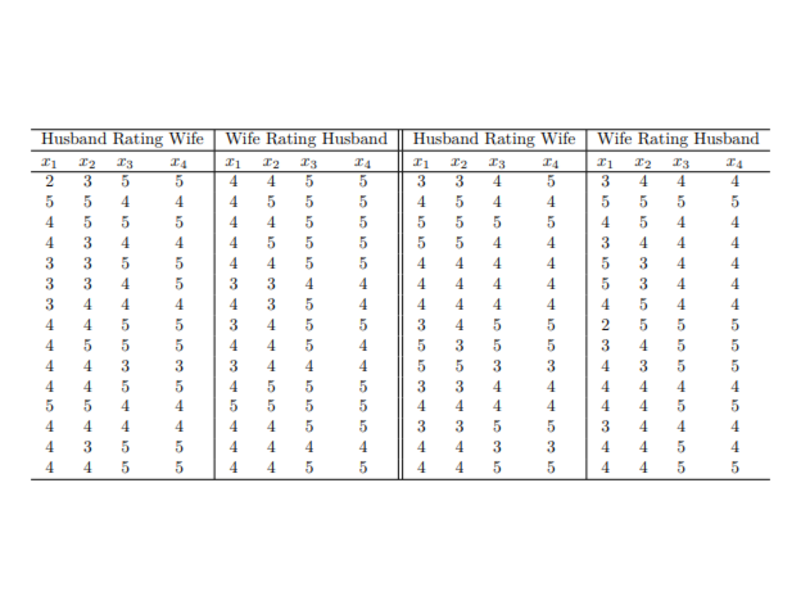

4 Hypothesis Tests on Mean Vectors
In the univariate case, a one-sample \(t\) test is used for the hypothesis test for one population mean, the test statistic is \(t=\frac{\bar x-\mu_0}{s/\sqrt{n}}\). We apply the one-sample \(t\) test on the paired differences when comparing two population means with paired samples. When comparing two population means with two independent samples, we use a non-pooled two-sample \(t\) test. The test statistic is \[ t=\frac{(\bar x_1-\bar x_2)-\Delta_0}{\sqrt{\frac{s_1^2}{n_1}+\frac{s_2^2}{n_2}}} \] If the two population variances \(\sigma_1^2, \sigma_2^2\) are the same, we can combine the two samples and the common variance can be estimated as \[ s_p^2=\frac{(n_1-1)s_1^2+(n_2-1)s_2^2}{n_1+n_2-2} \] and the test statistic becomes \[ t=\frac{(\bar x_1-\bar x_2)-\Delta_0}{s_p\sqrt{\frac{1}{n_1}+\frac{1}{n_2}}} \] When comparing more than two population means, we use one-way ANOVA. This note covers how to conduct hypothesis tests on the mean vector for multivariate data.
Learning Outcomes
After finishing this note, students should be able to
- Explain the main idea of using a chi-square Q-Q plot to assess the multivariate normality assumption.
- Assess the multivariate normality through a chi-square Q-Q plot and casual procedures using R.
- Conduct a Hotelling’s \(T^2\) test on one mean vector based on one sample or paired sample.
- Conduct a Hotelling’s \(T^2\) test on two mean vectors based on two independent samples.
- Conduct a one-way MANOVA test on at least two mean vectors based on at least two independent samples.
- Obtain \((1-\alpha)\times 100\%\) Bonferroni confidence intervals associated with a certain test if applicable.
4.1 Hypothesis Test for one Mean Vector
Let’s first review hypothesis tests for one population mean in the univarite case.
4.1.1 Univariate Case
For one population mean in the univariate case, the hypotheses for a two-tailed test are: \[ H_0: \mu=\mu_0 \mbox{ versus } H_a: \mu\ne \mu_0. \] By the critical value approach, we reject \(H_0: \mu=\mu_0\) at the significance level \(\alpha\) if the observed test statistic \[ t_o=\frac{\bar x-\mu_0}{\frac{s}{\sqrt{n}}}\ge t_{n-1} (\frac{\alpha}{2}) \mbox{ or } t_o\le -t_{n-1} (\frac{\alpha}{2}) \] where \(t_{n-1} (\frac{\alpha}{2})\) is the \(t\)-score with an area \(\frac{\alpha}{2}\) to its right under a \(t\) density curve with \(df=n-1\). It is equivalent to reject \(H_0\) if \[ |t_o|=\frac{|\bar x-\mu_0|}{s/\sqrt{n}}\ge t_{n-1} (\frac{\alpha}{2}) \mbox{ or if } t_o^2=\frac{(\bar x-\mu_0)^2}{s^2/n} \ge F_{1, n-1}(\alpha). \] Note that \[ T^2=\frac{(\bar X-\mu)^2}{s^2/n}=\frac{\left(\frac{\bar X-\mu}{\sigma/\sqrt{n}}\right)^2}{s^2/\sigma^2}\sim F_{1, n-1} \] because \(\left(\frac{\bar X-\mu}{\sigma/\sqrt{n}}\right)^2\sim \chi^2_1\) and \(\frac{(n-1)s^2}{\sigma^2}\sim \chi^2_{n-1}\). The term \(T^2=\frac{(\bar X-\mu)^2}{s^2/n}\) can be rewritten as \[ T^2=n(\bar X-\mu)(s^2)^{-1}(\bar X-\mu). \]
4.1.2 Multivariate Case
The one-sample t test can be generalized to the multivariate case for one population mean vector.
One-sample Hotelling’s \(T^2\) Test
For multivariate cases, each observation has multiple measurements in a vector form. The hypotheses for a two-tailed test are: \[ H_0: \boldsymbol{\mu}=\boldsymbol{\mu}_0 \mbox{ versus } H_a: \boldsymbol{\mu}\ne \boldsymbol{\mu}_0. \] Reject \(H_0: \boldsymbol{\mu}=\boldsymbol{\mu}_0\) if the test statistic \(T^2=n(\mathbf{\bar X}-\boldsymbol{\mu}_0)^T\mathbf{S}^{-1}(\mathbf{\bar X}-\boldsymbol{\mu}_0)\) is too large, where \(\mathbf{\bar X}_{p \times 1}\) is the sample mean vector and \(\mathbf{S}_{p\times p}\) is the sample covariance matrix respectively based on the observation matrix \(\mathbf{X}_{n \times p}\). The test statistic \(T^2\) follows a Hotelling’s \(T^2\) distribution with degrees of freedom \(p\) and \(n-1\). It can be shown that \[ \frac{n-p}{p(n-1)}T^2_{p, n-1}\sim F_{p, n-p}. \] Therefore, we reject \(H_0: \boldsymbol{\mu}=\boldsymbol{\mu}_0\) at significance level \(\alpha\) if \[ \frac{n(n-p)}{p(n-1)}(\mathbf{\bar x}-\boldsymbol{\mu}_0)^T\mathbf{S}^{-1}(\mathbf{\bar x}-\boldsymbol{\mu}_0)\ge F_{p, n-p}(\alpha) \] where \(F_{p, n-p}(\alpha)\) is the upper \(100\alpha\)th percentile of the \(F_{p, n-p}\) distribution.
A \((1-\alpha)\times 100 \%\) confidence region for the mean vector \(\boldsymbol{\mu}\) is the ellipsoid such that \[ (\mathbf{\bar x}-\boldsymbol{\mu})^T\mathbf{S}^{-1}(\mathbf{\bar x}-\boldsymbol{\mu})\le c^2=\frac{p(n-1)}{n(n-p)} F_{p, n-p}(\alpha). \] The ellipsoid is centered at \(\mathbf{\bar x}\) and has axes \(\pm \sqrt{\frac{p(n-1)}{n(n-p)} F_{p, n-p}(\alpha)}\sqrt{\lambda_i}\mathbf{e}_i\), where \(\lambda_i\) and \(\mathbf{e}_i\) are the eigenvalues and corresponding unit eigenvectors of the sample covariance matrix \(\mathbf{S}\). We should reject \(H_0: \boldsymbol{\mu}=\boldsymbol{\mu}_0\) if \(\boldsymbol{\mu}_0\) is outside the confidence region, i.e., if the distance \[ (\mathbf{\bar x}-\boldsymbol{\mu}_0)^T\mathbf{S}^{-1}(\mathbf{\bar x}-\boldsymbol{\mu}_0) >\frac{p(n-1)}{n(n-p)} F_{p, n-p}(\alpha). \]
\(\textbf{Side note}\): The derivation of the distribution of \(T^2\) is based on the Wishart distribution and its properties, which is outside the scope of this course. Some more details are provided here and are not required for exams.
- If \(\mathbf{y}_1, \mathbf{y}_2, \cdots, \mathbf{y}_n\) are identically independently follow a multivariate normal distribution \(N_p(\mathbf{0}, \boldsymbol{\Sigma})\), then \(\mathbf{A}=\sum_{i=1}^n \mathbf{y}_i \mathbf{y}_i^T\sim W_p(n, \boldsymbol{\Sigma})\), a \(p\) dimensional Wishart distribution with parameters \(n\) and \(\boldsymbol{\Sigma}\).
- If \(\mathbf{A} \sim W_p(n, \boldsymbol{\Sigma})\) and \(\mathbf{y}\) is a \(p\times 1\) random vector independent of \(\mathbf{A}\), then \[ \frac{\mathbf{y}^T\boldsymbol{\Sigma}^{-1} \mathbf{y}}{\mathbf{y}^T\mathbf{A}^{-1} \mathbf{y}}\sim \chi_{n-(p-1)}^2 \mbox{ and independent of $\mathbf{y}$.} \]
Given the definition of Wishart distribution and its property, the distribution of \(T^2\) can be obtained as follows:
- Suppose \(\mathbf{x}_1, \mathbf{x}_2, \cdots, \mathbf{x}_n\) are identically independently follow a multivariate normal distribution \(N_p(\boldsymbol{\mu}, \boldsymbol{\Sigma})\), then the sample mean vector \(\mathbf{\bar x}\) and the sample covariance matrix \(\mathbf{S}\) have the following distributions \[ \mathbf{\bar x}\sim N_p\left(\boldsymbol{\mu}, \frac{\boldsymbol{\Sigma}}{n}\right), \quad \quad (n-1)\mathbf{S}=\sum_{i=1}^n (\mathbf{x}_i-\mathbf{\bar x})(\mathbf{x}_i-\mathbf{\bar x})^T\sim W_p(n-1, \boldsymbol{\Sigma}) \] and the sample mean vector \(\mathbf{\bar x}\) and the sample covariance matrix \(\mathbf{S}\) are independent. This implies random vector \(\mathbf{\bar x}-\boldsymbol{\mu}\sim N_p\left(\boldsymbol{0}, \frac{\boldsymbol{\Sigma}}{n}\right)\) and independent of \(\mathbf{S}\). Since \[ \begin{aligned} U&=(\mathbf{\bar x}-\boldsymbol{\mu})^T\left(\frac{\boldsymbol{\Sigma}}{n}\right)^{-1}(\mathbf{\bar x}-\boldsymbol{\mu})=n(\mathbf{\bar x}-\boldsymbol{\mu})^T\boldsymbol{\Sigma}^{-1}(\mathbf{\bar x}-\boldsymbol{\mu})\sim \chi_p^2\\ V&=\frac{(\mathbf{\bar x}-\boldsymbol{\mu})^T\boldsymbol{\Sigma}^{-1}(\mathbf{\bar x}-\boldsymbol{\mu})}{(\mathbf{\bar x}-\boldsymbol{\mu})^T[(n-1)\mathbf{S}]^{-1}(\mathbf{\bar x}-\boldsymbol{\mu})}=\frac{(n-1)(\mathbf{\bar x}-\boldsymbol{\mu})^T\boldsymbol{\Sigma}^{-1}(\mathbf{\bar x}-\boldsymbol{\mu})}{(\mathbf{\bar x}-\boldsymbol{\mu})^T\mathbf{S}^{-1}(\mathbf{\bar x}-\boldsymbol{\mu})}\sim \chi_{(n-1)-(p-1)}^2 \end{aligned} \] and \(U\) and \(V\) are independent, \[ \frac{U/p}{V/(n-p)}\sim F_{p, n-p}\Longrightarrow \left(\frac{n-p}{p}\right)\left(\frac{n}{n-1}\right)(\mathbf{\bar x}-\boldsymbol{\mu})^T\mathbf{S}^{-1}(\mathbf{\bar x}-\boldsymbol{\mu})=\frac{n-p}{p(n-1)}T^2\sim F_{p, n-p}. \]
One-sample Hotelling’s \(T^2\) Confidence Interval
Recall the one-way ANOVA F test, we will follow up with a posthoc test to figure out which pairs are significantly different if we reject the null hypothesis that all means are equal. Similarly, for a one-mean Hotelling’s \(T^2\) test, if we reject \(H_0: \boldsymbol{\mu}=\boldsymbol{\mu}_0\), we would like to figure out in which variables the means are different.
- A \((1-\alpha)\times 100 \%\) simultaneous confidence interval for the \(i\)th variable \(X_i\) is given by \[ \bar x_i \pm \sqrt{\frac{p(n-1)}{(n-p)} F_{p, n-p}(\alpha)}\sqrt{\frac{s_i^2}{n}}, i=1, 2, \cdots, p \] where \(\bar x_i\) and \(s_i^2\) are the sample mean and sample variance of \(X_i\).
- A \((1-\alpha)\times 100 \%\) Bonferroni interval\ The problem with the simultaneous confidence intervals is that if we are not interested in all \(p\) variables, the simultaneous confidence interval may be too wide, and, hence, too conservative. This is called the {} problem. We can adopt the Bonferroni adjustment to fix this problem. A \((1-\alpha)\times 100 \%\) Bonferroni interval is given by \[ \bar x_i \pm t_{n-1}(\frac{\alpha}{2p})\sqrt{\frac{s_i^2}{n}}, i=1, 2, \cdots, p, \] where \(t_{n-1}(\frac{\alpha}{2p})\) is the \(\frac{\alpha}{2p}\times 100\)th upper-tailed quantile of the \(t\) distribution with \(df=n-1\).The mean vector differs in \(X_i\) if \(\mu_{0,i}\) is outside the interval.
\(\textbf{Example: One-sample Hotelling's } \boldsymbol{T^2} \textbf{ Test}\)
Given the data matrix \[ \mathbf{X}= \left[ \begin{array}{cc} 6& 9\\ 10& 6\\ 8&3 \end{array} \right] \]
Find the sample mean vector and covariance matrix.
Test at the 5% significance level \[ H_0: \boldsymbol{\mu}=\left[ \begin{array}{c} 9\\ 5 \end{array} \right] \text{versus } H_a: \boldsymbol{\mu}\ne\left[ \begin{array}{c} 9\\ 5 \end{array} \right]. \]
import numpy as np
from scipy.stats import f
xmat = np.array([[6, 9], [10, 6], [8, 3]])
mu0 = np.array([9, 5])
# manually in python as there is no one package for all tests
n, p = xmat.shape
diff = np.mean(xmat, axis=0) - mu0
inv_cov = np.linalg.inv(np.cov(xmat, rowvar=False, ddof=1))
t_squared = n * diff @ inv_cov @ diff # formula for T squared
f_stat = (n - p) / (p * (n - 1)) * t_squared # formula for F statistic
p_value = 1 - f.cdf(f_stat, p, n - p) # formula for p-value
print(f'T² statistic: {t_squared:.5f}')## T² statistic: 0.77778## F statistic: 0.19444 (df1 = 2, df2 = 1)## p-value: 0.84854.1.3 Evaluating Multivariate Normality
One of the assumptions for a one-sample \(t\) test in the univariate case is that we either have a normal population or a large sample. A normal probability plot is used to check the normality assumption. If the distribution of the data is roughly normal, the points will roughly fall on a straight line. Deviations from a straight line indicate that the underlying distribution is not normal.
The rationale behind the normal probability plot is as follows. If the data follow a normal distribution with mean \(\mu\) and standard deviation \(\sigma\), their \(z\)-scores given by \[ z_i=\frac{y_i-\mu}{\sigma}=-\frac{\mu}{\sigma}+\frac{1}{\sigma}y_i \] should follow a standard normal distribution. If we plot the normal scores \(z_i\) versus the observed values \(y_i\), the data are roughly on a straight line with intercept \(-\frac{\mu}{\sigma}\) and slope \(\frac{1}{\sigma}\). Therefore, if the data are from a normal population, plotting the normal scores (theoretical quantiles) obtained from Table III in the appendix of the recommended textbook (Weiss) versus the observations (observed quantiles) gives a straight line. The normal probability plot is also called the normal Q-Q plot; “Q” stands for “quantile”. The following example shows the steps to construct a normal probability plot.
Suppose the data are 75, 80, 90, 85, 75, and 40.
Here is the code for a normal Q-Q plot
import scipy.stats as stats
import matplotlib.pyplot as plt
x = np.array([75, 80, 90, 85, 75, 40])
stats.probplot(x, dist="norm", plot=plt)## ((array([-1.23132171, -0.63003387, -0.19819716, 0.19819716, 0.63003387,
## 1.23132171]), array([40, 75, 75, 80, 85, 90])), (np.float64(17.634241917611398), np.float64(74.16666666666667), np.float64(0.8792020358303791)))The six points do not fall in a straight line; the data do not seem to come from a normal distribution. The point on the lower left corner might be an outlier. If we remove this potential outlier, the other five points roughly fall on a straight line.
## (np.float64(-0.5), np.float64(767.5), np.float64(811.5), np.float64(-0.5))The following section explains how the normal scores given in Table III were calculated.
- Sort the observations \(x_1, x_2 \cdots, x_n\) from the smallest to the largest, we have \(x_{(1)}, x_{(2)}, \cdots, x_{(n)}\), where \(x_{(1)}\) denotes the smallest observation, \(x_{(2)}\) the second smallest and \(x_{(n)}\) the largest value.
- Let \[ a_i=\frac{i-\frac{3}{8}}{n+\frac{1}{4}}, i=1, 2, \ldots, n. \] As we can see, \(a_i\) is roughly the percentage of values that lie below the \(i\)th smallest, the fractions \(\frac{3}{8}\) and \(\frac{1}{4}\) is for continuity correction.
- Using Table II to find the normal scores \(z_1, z_2, \cdots, z_n\), such that \[ P(Z\le z_i)=\mbox{Area}(Z\le z_i)=a_i, i=1, 2, \cdots, n. \]
Use the previous example with six grades, the normal scores for \(n=6\) are:
\[\begin{array}{c|c|c|c} \hline \text{Grade} (x_{(i)}) &i&a_i=\frac{i-\frac{3}{8}}{n+\frac{1}{4}}&\text{Normal score} (z_i)\\ \hline 40&1&(1-3/8)/(6+1/4)=0.10&-1.28\\ 75&2&(2-3/8)/(6+1/4)=0.26&-0.64\\ 75&3&(3-3/8)/(6+1/4)=0.42&-0.20\\ 80&4&(4-3/8)/(6+1/4)=0.58&0.20\\ 85&5&(5-3/8)/(6+1/4)=0.74&0.64\\ 90&6&(6-3/8)/(6+1/4)=0.90&1.28\\ \hline \end{array}\]from scipy.stats import norm
# First example: n = 6
i = np.arange(1, 7)
n = len(i)
a = (i - 3/8) / (n + 0.25)
z = norm.ppf(a)
print(np.round(z, 2))## [-1.28 -0.64 -0.2 0.2 0.64 1.28]# Second example: n = 10
i2 = np.arange(1, 11)
n2 = len(i2)
a2 = (i2 - 3/8) / (n2 + 0.25)
z2 = norm.ppf(a2)
print(np.round(z2, 2))## [-1.55 -1. -0.66 -0.38 -0.12 0.12 0.38 0.66 1. 1.55]\(\textbf{Note: }\)
- the normal probability plots in the Stat 151 textbook are generated by Minitab, which plots the normal scores versus the sorted observations. It does not matter whether we plot the observed data in the \(x\)-axis or in the \(y\)-axis. The points will fall on a straight line if the data are from a normal population.
- Different formulas can be used to calculate \(a_i\). Another more popular choice is \(a_i=\frac{i-0.5}{n}\), which is used in \(\textsf{R.}\)
A similar idea can be applied to the multivariate case. Suppose \(\mathbf{x}_1, \mathbf{x}_2, \cdots, \mathbf{x}_n\) is a simple random sample of size \(n\) from a multivariate normal distribution \(N_p(\boldsymbol{\mu}, \boldsymbol{\Sigma})\), then \((\mathbf{x}_i-\boldsymbol{\mu})^T\boldsymbol{\Sigma}^{-1}(\mathbf{x}_i-\boldsymbol{\mu})\sim \chi_p^2\). If the observations follow a multivariate normal distribution \(N_p(\boldsymbol{\mu}, \boldsymbol{\Sigma})\), \((\mathbf{x}_i-\mathbf{\bar x})^T\mathbf{S}^{-1}(\mathbf{x}_i-\mathbf{\bar x})\) should also roughly follows a \(\chi_p^2\) distribution. Therefore, we could use the theoretical quantiles from a \(\chi_p^2\) distribution to test multivariate normality. The steps are as follows:
- Calculate the sample mean vector \(\mathbf{\bar x}\) and the sample covariance matrix \(\mathbf{S}\).
- Calculate the Mahalanobis distance from each observation \(\mathbf{x}_i\) to the sample mean \(\mathbf{\bar x}\), denoted as \(d_i^2\).
- Sort the distances \(d_i^2\) from the smallest to the largest, denoted as \(d_{(1)}^2, d_{(2)}^2, \cdots, d_{(n)}^2\). These are the observed quantiles. Obtain the theoretical quantiles from a \(\chi_p^2\) distribution, denoted as \(q_{(i)}=\chi_p^2(1-\frac{i-0.5}{n})\), i.e., the \(\frac{i-0.5}{n}\times 100\)th percentile.
- Draw a scatter plot of the observed quantiles \(d_{(i)}^2\) versus the theoretical quantiles \(q_{(i)}\). If the data are from a multivariate normal distribution, the data points should roughly fall on a 45-degree straight line.
Figure 4.1 is the chi-square probability plot on the 50 iris (setosa) flowers and the table to its right compares the Mahanalobis distance (observed quantiles) and the theoretical quantiles obtained from a \(\chi_4^2\) distribution. The sample mean vector is \(\mathbf{\bar x}=[5.006, 3.428, 1.462, 0.246]^T\). Except for the last ten observations, most of the points are roughly on the 45-degree line. There is no strong evidence against the null hypothesis: data follow a chi-square distribution.
import pandas as pd
from scipy.stats import chi2
from scipy.spatial.distance import mahalanobis
from sklearn.datasets import load_iris
iris = load_iris()
df = pd.DataFrame(iris.data, columns=iris.feature_names)
# subsetting setosa
x = df.iloc[:50, :].values
n, p = x.shape
mean_vec = np.mean(x, axis=0)
cov_mat = np.cov(x, rowvar=False)
cov_inv = np.linalg.inv(cov_mat)
# mahalanobis distances
D2 = np.array([mahalanobis(obs, mean_vec, cov_inv)**2 for obs in x])
D2_sorted = np.sort(D2)
q_vec = (np.arange(1, n+1) - 0.5) / n
q_theo = chi2.ppf(q_vec, df=p)
# Plot
plt.figure(figsize=(7, 5))
plt.plot(q_theo, D2_sorted, 'ko', markersize=4)
plt.plot([0, max(q_theo)], [0, max(q_theo)], 'r-', linewidth=2)
plt.xlabel("Theoretical Quantile")
plt.ylabel("Observed Quantile")
plt.title("Chi-square Q-Q Plot")
plt.grid(True, linestyle='--', alpha=0.3)
plt.tight_layout()
plt.show()Figure 4.1: Chi-squre Q-Q Plot for Setosa
We can apply the Kolmogorov-Smirnov (KS) test to check whether the Mahanalobis distances follow a chi-square distribution with \(df=4\). The Kolmogorov-Smirnov is a non-parametric statistical test used to determine if a sample of data follows a specified probability distribution or if two samples come from the same underlying distribution. The main idea behind the KS test is to compare the empirical cumulative distribution function (ECDF) of the sample data to the cumulative distribution function (CDF) of the target distribution. Since the p-value of the test is 0.4337, there is no strong evidence against the null hypothesis: data follow a chi-square distribution.
from scipy.stats import kstest
ks_stat, p_value = kstest(D2, cdf='chi2', args=(4,))
print(f"KS statistic (D): {ks_stat:.5f}, p-value: {p_value:.4f}")## KS statistic (D): 0.12001, p-value: 0.4337The following table compares the observed and theoretical quantiles.
\[\begin{array}{c|c|c|c|c|c} \hline \text{Sepal} & \text{Sepal} & \text{Petal}& \text{Petal}& \text{Observed} & \text{Theoretical}\\ \text{Length}&\text{Width}&\text{Length}&\text{Width}&\text{Quantiles} d_{(i)}^2 &\text{Quantiles} q_{(i)}\\ \hline 5 & 3.4 & 1.5 & 0.2 & 0.343 & 0.297 \\ 5.1 & 3.5 & 1.4 & 0.2 & 0.449 & 0.535 \\ 5 & 3.3 & 1.4 & 0.2 & 0.495 & 0.711 \\ 5.1 & 3.4 & 1.5 & 0.2 & 0.589 & 0.862 \\ 5.1 & 3.5 & 1.4 & 0.3 & 0.636 & 0.999 \\ 5 & 3.6 & 1.4 & 0.2 & 0.762 & 1.127 \\ 5.2 & 3.5 & 1.5 & 0.2 & 0.829 & 1.249 \\ \vdots&\vdots&\vdots&\vdots&\vdots&\vdots\\ 5.2 & 4.1 & 1.5 & 0.1 & 7.699 & 7.114 \\ 5.1 & 3.8 & 1.9 & 0.4 & 8.601 & 7.539 \\ 4.8 & 3.4 & 1.9 & 0.2 & 9.748 & 8.043 \\ 5.8 & 4 & 1.2 & 0.2 & 10.222 & 8.666 \\ 4.6 & 3.6 & 1 & 0.2 & 11.044 & 9.488 \\ 5 & 3.5 & 1.6 & 0.6 & 12.310 & 10.712 \\ 4.5 & 2.3 & 1.3 & 0.3 & 12.328 & 13.277 \\ \hline \end{array}\]We can also employ the following diagnostic procedures to assess the multivariate normal assumption in a more casual way.
- Produce a normal probability plot (Q-Q plot ) for each variable. What we should look for is whether the points are roughly on a straight line.
- Produce scatter plots for each pair of variables. Under multivariate normality, we should see an elliptical cloud of points.
- Produce a three-dimensional rotating scatter plot. Again, we should see an elliptical cloud of points.
Figure 4.2 shows a normal Q-Q plot for each of the four variables of the Setosa Iris data. Except for Petal Width which has only six distinct values, all other three variables roughly follow normal distributions.
import seaborn as sns
iris_df = pd.DataFrame(iris.data, columns=iris.feature_names)
iris_df['species'] = iris.target
# Filter for Setosa (species = 0)
setosa_df = iris_df[iris_df['species'] == 0]
# Plot Q-Q plots for each variable
fig, axes = plt.subplots(2, 2, figsize=(10, 8))
axes = axes.flatten()
columns = setosa_df.columns[:-1]
for i, col in enumerate(columns):
stats.probplot(setosa_df[col], dist="norm", plot=axes[i])
axes[i].set_title(f"QQ Plot for {col}")
plt.subplots_adjust(hspace=0.6, wspace=0.3) # spacing
plt.show()Figure 4.2: Normal Q-Q Plot for Setosa
Figure 4.3 is the scatter plots matrix of those 50 Setosa iris flowers. Sepal Length and Sepal Width form an elliptical cloud. Sepal Length and Petal Length, Sepal Width and Petal Length form a roughly elliptical cloud. Due to the sparse values of Petal Width, it does not form elliptical cloud of points with any other variables.
setosa_df.columns = ['Sepal Length', 'Sepal Width', 'Petal Length', 'Petal Width', 'Species']
setosa_plot_df = setosa_df.drop(columns='Species')
sns.pairplot(setosa_plot_df, diag_kind="hist", corner=False)Figure 4.3: Scatter Plot Matrix for Setosa
Figure 4.3: Scatter Plot Matrix for Setosa
\(\textbf{Example: Inference on One Mean Vector with Admission Data}\)
The admission data set contains 397 graduate school admissions decisions, among which \(n_1=271\) were not admitted and \(n_2=126\) were admitted. The explanatory variables are the student’s GRE (Graduate Record Exam scores), GPA (grade point average) and prestige of the undergraduate institution (values from 1 to 4 with 1 having the highest prestige). The response variable, admit/don’t admit, is a binary variable with 1=admitted and 0=not admitted.
Let’s focus on the admitted students with the first two quantitative explanatory variables, GRE and GPA. This creates a one-sample scenario. Given that the sample mean vector \(\mathbf{\bar x}=[618.571, 3.489]^T\) and the sample covariance matrix and its inverse \[ \mathbf{S}=\left[ \begin{array}{cc} 11937.143& 9.452\\ 9.452& 0.138 \end{array} \right]; \quad \quad \mathbf{S}^{-1}=\left[ \begin{array}{cc} 8.857592\times 10^{-5} & -0.006066809\\ -0.006066809 & 7.661909264 \end{array} \right] \]
We could check whether the two variables GRE and GPA are bivariate normally distributed based on the following four graphs.
from scipy.stats import probplot
df = pd.read_csv("data/admission.csv")
df = df.dropna()
xx = df[['gre', 'gpa']].to_numpy()
n, p = xx.shape
mean_vec = np.mean(xx, axis=0)
cov_mat = np.cov(xx.T)
inv_covmat = np.linalg.inv(cov_mat)
D2 = np.array([mahalanobis(x, mean_vec, inv_covmat)**2 for x in xx])
# theoretical chi-square quantiles
qvec = ((np.arange(1, n + 1) - 0.5) / n)
q_theo = chi2.ppf(qvec, df=p)
q_obs = np.sort(D2)
fig, axes = plt.subplots(2, 2, figsize=(12, 10))
# Scatter plot of GRE vs GPA
axes[0, 0].scatter(df['gre'], df['gpa'], c='black')
axes[0, 0].set_title("Scatter Plot of GPA vs GRE")
axes[0, 0].set_xlabel("GRE")
axes[0, 0].set_ylabel("GPA")
# QQ plot for GRE
probplot(df['gre'], dist="norm", plot=axes[0, 1])## ((array([-2.9210196 , -2.63280541, -2.47026126, -2.35476152, -2.26410345,
## -2.18894403, -2.12443167, -2.06771086, -2.0169534 , -1.97091559,
## -1.9287115 , -1.88968692, -1.85334448, -1.81929684, -1.78723626,
## -1.75691401, -1.72812608, -1.70070296, -1.67450224, -1.64940305,
## -1.6253019 , -1.60210948, -1.57974813, -1.55814991, -1.53725502,
## -1.51701052, -1.49736934, -1.47828938, -1.45973291, -1.44166589,
## -1.42405757, -1.40688004, -1.39010789, -1.37371791, -1.35768887,
## -1.34200126, -1.32663715, -1.31157996, -1.2968144 , -1.28232629,
## -1.26810245, -1.25413065, -1.24039947, -1.22689826, -1.21361706,
## -1.20054655, -1.18767798, -1.17500315, -1.16251432, -1.15020422,
## -1.138066 , -1.12609318, -1.11427965, -1.10261961, -1.09110758,
## -1.07973837, -1.06850703, -1.05740889, -1.04643948, -1.03559457,
## -1.0248701 , -1.01426223, -1.00376729, -0.99338175, -0.98310227,
## -0.97292563, -0.96284878, -0.95286875, -0.94298274, -0.93318804,
## -0.92348206, -0.91386231, -0.90432639, -0.89487201, -0.88549694,
## -0.87619907, -0.86697633, -0.85782675, -0.84874843, -0.83973953,
## -0.83079827, -0.82192294, -0.81311188, -0.80436351, -0.79567627,
## -0.78704866, -0.77847925, -0.76996662, -0.76150943, -0.75310636,
## -0.74475613, -0.73645751, -0.7282093 , -0.72001034, -0.7118595 ,
## -0.70375568, -0.69569781, -0.68768487, -0.67971583, -0.67178974,
## -0.66390562, -0.65606255, -0.64825964, -0.640496 , -0.63277078,
## -0.62508313, -0.61743225, -0.60981734, -0.60223763, -0.59469237,
## -0.58718081, -0.57970224, -0.57225594, -0.56484125, -0.55745748,
## -0.55010398, -0.5427801 , -0.53548523, -0.52821874, -0.52098003,
## -0.51376852, -0.50658363, -0.4994248 , -0.49229147, -0.48518311,
## -0.47809918, -0.47103915, -0.46400253, -0.45698881, -0.4499975 ,
## -0.44302812, -0.43608018, -0.42915324, -0.42224683, -0.4153605 ,
## -0.40849381, -0.40164632, -0.39481762, -0.38800728, -0.38121489,
## -0.37444004, -0.36768234, -0.36094138, -0.35421679, -0.34750817,
## -0.34081516, -0.33413738, -0.32747447, -0.32082607, -0.31419181,
## -0.30757136, -0.30096436, -0.29437047, -0.28778936, -0.28122069,
## -0.27466412, -0.26811935, -0.26158604, -0.25506388, -0.24855255,
## -0.24205174, -0.23556114, -0.22908045, -0.22260937, -0.2161476 ,
## -0.20969484, -0.2032508 , -0.19681519, -0.19038772, -0.1839681 ,
## -0.17755606, -0.17115131, -0.16475358, -0.15836258, -0.15197804,
## -0.14559969, -0.13922726, -0.13286048, -0.12649907, -0.12014279,
## -0.11379135, -0.1074445 , -0.10110198, -0.09476352, -0.08842887,
## -0.08209776, -0.07576994, -0.06944516, -0.06312315, -0.05680366,
## -0.05048644, -0.04417124, -0.03785779, -0.03154586, -0.02523518,
## -0.01892551, -0.01261659, -0.00630817, 0. , 0.00630817,
## 0.01261659, 0.01892551, 0.02523518, 0.03154586, 0.03785779,
## 0.04417124, 0.05048644, 0.05680366, 0.06312315, 0.06944516,
## 0.07576994, 0.08209776, 0.08842887, 0.09476352, 0.10110198,
## 0.1074445 , 0.11379135, 0.12014279, 0.12649907, 0.13286048,
## 0.13922726, 0.14559969, 0.15197804, 0.15836258, 0.16475358,
## 0.17115131, 0.17755606, 0.1839681 , 0.19038772, 0.19681519,
## 0.2032508 , 0.20969484, 0.2161476 , 0.22260937, 0.22908045,
## 0.23556114, 0.24205174, 0.24855255, 0.25506388, 0.26158604,
## 0.26811935, 0.27466412, 0.28122069, 0.28778936, 0.29437047,
## 0.30096436, 0.30757136, 0.31419181, 0.32082607, 0.32747447,
## 0.33413738, 0.34081516, 0.34750817, 0.35421679, 0.36094138,
## 0.36768234, 0.37444004, 0.38121489, 0.38800728, 0.39481762,
## 0.40164632, 0.40849381, 0.4153605 , 0.42224683, 0.42915324,
## 0.43608018, 0.44302812, 0.4499975 , 0.45698881, 0.46400253,
## 0.47103915, 0.47809918, 0.48518311, 0.49229147, 0.4994248 ,
## 0.50658363, 0.51376852, 0.52098003, 0.52821874, 0.53548523,
## 0.5427801 , 0.55010398, 0.55745748, 0.56484125, 0.57225594,
## 0.57970224, 0.58718081, 0.59469237, 0.60223763, 0.60981734,
## 0.61743225, 0.62508313, 0.63277078, 0.640496 , 0.64825964,
## 0.65606255, 0.66390562, 0.67178974, 0.67971583, 0.68768487,
## 0.69569781, 0.70375568, 0.7118595 , 0.72001034, 0.7282093 ,
## 0.73645751, 0.74475613, 0.75310636, 0.76150943, 0.76996662,
## 0.77847925, 0.78704866, 0.79567627, 0.80436351, 0.81311188,
## 0.82192294, 0.83079827, 0.83973953, 0.84874843, 0.85782675,
## 0.86697633, 0.87619907, 0.88549694, 0.89487201, 0.90432639,
## 0.91386231, 0.92348206, 0.93318804, 0.94298274, 0.95286875,
## 0.96284878, 0.97292563, 0.98310227, 0.99338175, 1.00376729,
## 1.01426223, 1.0248701 , 1.03559457, 1.04643948, 1.05740889,
## 1.06850703, 1.07973837, 1.09110758, 1.10261961, 1.11427965,
## 1.12609318, 1.138066 , 1.15020422, 1.16251432, 1.17500315,
## 1.18767798, 1.20054655, 1.21361706, 1.22689826, 1.24039947,
## 1.25413065, 1.26810245, 1.28232629, 1.2968144 , 1.31157996,
## 1.32663715, 1.34200126, 1.35768887, 1.37371791, 1.39010789,
## 1.40688004, 1.42405757, 1.44166589, 1.45973291, 1.47828938,
## 1.49736934, 1.51701052, 1.53725502, 1.55814991, 1.57974813,
## 1.60210948, 1.6253019 , 1.64940305, 1.67450224, 1.70070296,
## 1.72812608, 1.75691401, 1.78723626, 1.81929684, 1.85334448,
## 1.88968692, 1.9287115 , 1.97091559, 2.0169534 , 2.06771086,
## 2.12443167, 2.18894403, 2.26410345, 2.35476152, 2.47026126,
## 2.63280541, 2.9210196 ]), array([220., 300., 300., 300., 340., 340., 340., 340., 360., 360., 360.,
## 360., 380., 380., 380., 380., 380., 380., 380., 380., 400., 400.,
## 400., 400., 400., 400., 400., 400., 400., 400., 400., 420., 420.,
## 420., 420., 420., 420., 420., 440., 440., 440., 440., 440., 440.,
## 440., 440., 440., 440., 460., 460., 460., 460., 460., 460., 460.,
## 460., 460., 460., 460., 460., 460., 480., 480., 480., 480., 480.,
## 480., 480., 480., 480., 480., 480., 480., 480., 480., 480., 480.,
## 500., 500., 500., 500., 500., 500., 500., 500., 500., 500., 500.,
## 500., 500., 500., 500., 500., 500., 500., 500., 500., 500., 520.,
## 520., 520., 520., 520., 520., 520., 520., 520., 520., 520., 520.,
## 520., 520., 520., 520., 520., 520., 520., 520., 520., 520., 520.,
## 520., 540., 540., 540., 540., 540., 540., 540., 540., 540., 540.,
## 540., 540., 540., 540., 540., 540., 540., 540., 540., 540., 540.,
## 540., 540., 540., 540., 540., 540., 560., 560., 560., 560., 560.,
## 560., 560., 560., 560., 560., 560., 560., 560., 560., 560., 560.,
## 560., 560., 560., 560., 560., 560., 560., 560., 580., 580., 580.,
## 580., 580., 580., 580., 580., 580., 580., 580., 580., 580., 580.,
## 580., 580., 580., 580., 580., 580., 580., 580., 580., 580., 580.,
## 580., 580., 580., 600., 600., 600., 600., 600., 600., 600., 600.,
## 600., 600., 600., 600., 600., 600., 600., 600., 600., 600., 600.,
## 600., 600., 600., 600., 620., 620., 620., 620., 620., 620., 620.,
## 620., 620., 620., 620., 620., 620., 620., 620., 620., 620., 620.,
## 620., 620., 620., 620., 620., 620., 620., 620., 620., 620., 620.,
## 620., 640., 640., 640., 640., 640., 640., 640., 640., 640., 640.,
## 640., 640., 640., 640., 640., 640., 640., 640., 640., 640., 640.,
## 660., 660., 660., 660., 660., 660., 660., 660., 660., 660., 660.,
## 660., 660., 660., 660., 660., 660., 660., 660., 660., 660., 660.,
## 660., 680., 680., 680., 680., 680., 680., 680., 680., 680., 680.,
## 680., 680., 680., 680., 680., 680., 680., 680., 680., 680., 700.,
## 700., 700., 700., 700., 700., 700., 700., 700., 700., 700., 700.,
## 700., 700., 700., 700., 700., 700., 700., 700., 700., 700., 720.,
## 720., 720., 720., 720., 720., 720., 720., 720., 720., 720., 740.,
## 740., 740., 740., 740., 740., 740., 740., 740., 740., 740., 760.,
## 760., 760., 760., 760., 780., 780., 780., 780., 780., 800., 800.,
## 800., 800., 800., 800., 800., 800., 800., 800., 800., 800., 800.,
## 800., 800., 800., 800., 800., 800., 800., 800., 800., 800., 800.,
## 800.])), (np.float64(115.55472653820884), np.float64(587.8589420654912), np.float64(0.9936469932510308)))axes[0, 1].set_title("Normal Q-Q Plot for GRE")
# QQ plot for GPA
probplot(df['gpa'], dist="norm", plot=axes[1, 0])## ((array([-2.9210196 , -2.63280541, -2.47026126, -2.35476152, -2.26410345,
## -2.18894403, -2.12443167, -2.06771086, -2.0169534 , -1.97091559,
## -1.9287115 , -1.88968692, -1.85334448, -1.81929684, -1.78723626,
## -1.75691401, -1.72812608, -1.70070296, -1.67450224, -1.64940305,
## -1.6253019 , -1.60210948, -1.57974813, -1.55814991, -1.53725502,
## -1.51701052, -1.49736934, -1.47828938, -1.45973291, -1.44166589,
## -1.42405757, -1.40688004, -1.39010789, -1.37371791, -1.35768887,
## -1.34200126, -1.32663715, -1.31157996, -1.2968144 , -1.28232629,
## -1.26810245, -1.25413065, -1.24039947, -1.22689826, -1.21361706,
## -1.20054655, -1.18767798, -1.17500315, -1.16251432, -1.15020422,
## -1.138066 , -1.12609318, -1.11427965, -1.10261961, -1.09110758,
## -1.07973837, -1.06850703, -1.05740889, -1.04643948, -1.03559457,
## -1.0248701 , -1.01426223, -1.00376729, -0.99338175, -0.98310227,
## -0.97292563, -0.96284878, -0.95286875, -0.94298274, -0.93318804,
## -0.92348206, -0.91386231, -0.90432639, -0.89487201, -0.88549694,
## -0.87619907, -0.86697633, -0.85782675, -0.84874843, -0.83973953,
## -0.83079827, -0.82192294, -0.81311188, -0.80436351, -0.79567627,
## -0.78704866, -0.77847925, -0.76996662, -0.76150943, -0.75310636,
## -0.74475613, -0.73645751, -0.7282093 , -0.72001034, -0.7118595 ,
## -0.70375568, -0.69569781, -0.68768487, -0.67971583, -0.67178974,
## -0.66390562, -0.65606255, -0.64825964, -0.640496 , -0.63277078,
## -0.62508313, -0.61743225, -0.60981734, -0.60223763, -0.59469237,
## -0.58718081, -0.57970224, -0.57225594, -0.56484125, -0.55745748,
## -0.55010398, -0.5427801 , -0.53548523, -0.52821874, -0.52098003,
## -0.51376852, -0.50658363, -0.4994248 , -0.49229147, -0.48518311,
## -0.47809918, -0.47103915, -0.46400253, -0.45698881, -0.4499975 ,
## -0.44302812, -0.43608018, -0.42915324, -0.42224683, -0.4153605 ,
## -0.40849381, -0.40164632, -0.39481762, -0.38800728, -0.38121489,
## -0.37444004, -0.36768234, -0.36094138, -0.35421679, -0.34750817,
## -0.34081516, -0.33413738, -0.32747447, -0.32082607, -0.31419181,
## -0.30757136, -0.30096436, -0.29437047, -0.28778936, -0.28122069,
## -0.27466412, -0.26811935, -0.26158604, -0.25506388, -0.24855255,
## -0.24205174, -0.23556114, -0.22908045, -0.22260937, -0.2161476 ,
## -0.20969484, -0.2032508 , -0.19681519, -0.19038772, -0.1839681 ,
## -0.17755606, -0.17115131, -0.16475358, -0.15836258, -0.15197804,
## -0.14559969, -0.13922726, -0.13286048, -0.12649907, -0.12014279,
## -0.11379135, -0.1074445 , -0.10110198, -0.09476352, -0.08842887,
## -0.08209776, -0.07576994, -0.06944516, -0.06312315, -0.05680366,
## -0.05048644, -0.04417124, -0.03785779, -0.03154586, -0.02523518,
## -0.01892551, -0.01261659, -0.00630817, 0. , 0.00630817,
## 0.01261659, 0.01892551, 0.02523518, 0.03154586, 0.03785779,
## 0.04417124, 0.05048644, 0.05680366, 0.06312315, 0.06944516,
## 0.07576994, 0.08209776, 0.08842887, 0.09476352, 0.10110198,
## 0.1074445 , 0.11379135, 0.12014279, 0.12649907, 0.13286048,
## 0.13922726, 0.14559969, 0.15197804, 0.15836258, 0.16475358,
## 0.17115131, 0.17755606, 0.1839681 , 0.19038772, 0.19681519,
## 0.2032508 , 0.20969484, 0.2161476 , 0.22260937, 0.22908045,
## 0.23556114, 0.24205174, 0.24855255, 0.25506388, 0.26158604,
## 0.26811935, 0.27466412, 0.28122069, 0.28778936, 0.29437047,
## 0.30096436, 0.30757136, 0.31419181, 0.32082607, 0.32747447,
## 0.33413738, 0.34081516, 0.34750817, 0.35421679, 0.36094138,
## 0.36768234, 0.37444004, 0.38121489, 0.38800728, 0.39481762,
## 0.40164632, 0.40849381, 0.4153605 , 0.42224683, 0.42915324,
## 0.43608018, 0.44302812, 0.4499975 , 0.45698881, 0.46400253,
## 0.47103915, 0.47809918, 0.48518311, 0.49229147, 0.4994248 ,
## 0.50658363, 0.51376852, 0.52098003, 0.52821874, 0.53548523,
## 0.5427801 , 0.55010398, 0.55745748, 0.56484125, 0.57225594,
## 0.57970224, 0.58718081, 0.59469237, 0.60223763, 0.60981734,
## 0.61743225, 0.62508313, 0.63277078, 0.640496 , 0.64825964,
## 0.65606255, 0.66390562, 0.67178974, 0.67971583, 0.68768487,
## 0.69569781, 0.70375568, 0.7118595 , 0.72001034, 0.7282093 ,
## 0.73645751, 0.74475613, 0.75310636, 0.76150943, 0.76996662,
## 0.77847925, 0.78704866, 0.79567627, 0.80436351, 0.81311188,
## 0.82192294, 0.83079827, 0.83973953, 0.84874843, 0.85782675,
## 0.86697633, 0.87619907, 0.88549694, 0.89487201, 0.90432639,
## 0.91386231, 0.92348206, 0.93318804, 0.94298274, 0.95286875,
## 0.96284878, 0.97292563, 0.98310227, 0.99338175, 1.00376729,
## 1.01426223, 1.0248701 , 1.03559457, 1.04643948, 1.05740889,
## 1.06850703, 1.07973837, 1.09110758, 1.10261961, 1.11427965,
## 1.12609318, 1.138066 , 1.15020422, 1.16251432, 1.17500315,
## 1.18767798, 1.20054655, 1.21361706, 1.22689826, 1.24039947,
## 1.25413065, 1.26810245, 1.28232629, 1.2968144 , 1.31157996,
## 1.32663715, 1.34200126, 1.35768887, 1.37371791, 1.39010789,
## 1.40688004, 1.42405757, 1.44166589, 1.45973291, 1.47828938,
## 1.49736934, 1.51701052, 1.53725502, 1.55814991, 1.57974813,
## 1.60210948, 1.6253019 , 1.64940305, 1.67450224, 1.70070296,
## 1.72812608, 1.75691401, 1.78723626, 1.81929684, 1.85334448,
## 1.88968692, 1.9287115 , 1.97091559, 2.0169534 , 2.06771086,
## 2.12443167, 2.18894403, 2.26410345, 2.35476152, 2.47026126,
## 2.63280541, 2.9210196 ]), array([2.26, 2.42, 2.42, 2.48, 2.52, 2.55, 2.56, 2.62, 2.62, 2.63, 2.65,
## 2.67, 2.67, 2.68, 2.69, 2.7 , 2.7 , 2.71, 2.71, 2.73, 2.76, 2.78,
## 2.78, 2.79, 2.79, 2.81, 2.81, 2.81, 2.82, 2.82, 2.83, 2.84, 2.85,
## 2.85, 2.86, 2.86, 2.88, 2.9 , 2.9 , 2.9 , 2.9 , 2.91, 2.91, 2.91,
## 2.92, 2.92, 2.93, 2.93, 2.93, 2.93, 2.93, 2.94, 2.94, 2.94, 2.95,
## 2.96, 2.96, 2.97, 2.97, 2.98, 2.98, 2.98, 2.98, 2.98, 2.98, 3. ,
## 3. , 3. , 3. , 3.01, 3.01, 3.02, 3.02, 3.02, 3.02, 3.03, 3.04,
## 3.04, 3.05, 3.05, 3.05, 3.06, 3.07, 3.07, 3.07, 3.07, 3.08, 3.08,
## 3.08, 3.08, 3.09, 3.1 , 3.11, 3.12, 3.12, 3.12, 3.12, 3.13, 3.13,
## 3.13, 3.13, 3.13, 3.14, 3.14, 3.14, 3.14, 3.15, 3.15, 3.15, 3.15,
## 3.15, 3.15, 3.15, 3.16, 3.16, 3.17, 3.17, 3.17, 3.17, 3.17, 3.18,
## 3.19, 3.19, 3.19, 3.19, 3.19, 3.2 , 3.2 , 3.21, 3.22, 3.22, 3.22,
## 3.22, 3.22, 3.23, 3.23, 3.23, 3.24, 3.24, 3.25, 3.25, 3.27, 3.27,
## 3.27, 3.28, 3.28, 3.28, 3.28, 3.29, 3.29, 3.3 , 3.3 , 3.3 , 3.3 ,
## 3.31, 3.31, 3.31, 3.31, 3.31, 3.31, 3.31, 3.31, 3.32, 3.32, 3.32,
## 3.32, 3.33, 3.33, 3.33, 3.33, 3.33, 3.34, 3.34, 3.34, 3.34, 3.34,
## 3.35, 3.35, 3.35, 3.35, 3.35, 3.35, 3.35, 3.36, 3.36, 3.36, 3.36,
## 3.37, 3.37, 3.37, 3.38, 3.38, 3.38, 3.38, 3.38, 3.39, 3.39, 3.39,
## 3.4 , 3.4 , 3.4 , 3.4 , 3.4 , 3.4 , 3.4 , 3.41, 3.42, 3.43, 3.43,
## 3.43, 3.43, 3.43, 3.44, 3.44, 3.44, 3.45, 3.45, 3.45, 3.45, 3.45,
## 3.45, 3.45, 3.46, 3.46, 3.46, 3.46, 3.46, 3.47, 3.47, 3.47, 3.48,
## 3.48, 3.48, 3.49, 3.49, 3.49, 3.49, 3.5 , 3.5 , 3.5 , 3.5 , 3.51,
## 3.51, 3.51, 3.51, 3.51, 3.52, 3.52, 3.52, 3.52, 3.53, 3.53, 3.54,
## 3.54, 3.54, 3.55, 3.56, 3.56, 3.56, 3.57, 3.57, 3.57, 3.58, 3.58,
## 3.58, 3.58, 3.58, 3.59, 3.59, 3.59, 3.59, 3.59, 3.6 , 3.6 , 3.6 ,
## 3.61, 3.61, 3.61, 3.62, 3.62, 3.63, 3.63, 3.63, 3.63, 3.63, 3.63,
## 3.64, 3.64, 3.64, 3.64, 3.64, 3.65, 3.65, 3.65, 3.65, 3.66, 3.67,
## 3.67, 3.67, 3.67, 3.69, 3.69, 3.69, 3.7 , 3.7 , 3.7 , 3.71, 3.71,
## 3.72, 3.73, 3.73, 3.74, 3.74, 3.74, 3.74, 3.75, 3.75, 3.76, 3.76,
## 3.77, 3.77, 3.77, 3.77, 3.77, 3.78, 3.78, 3.78, 3.78, 3.8 , 3.8 ,
## 3.81, 3.81, 3.81, 3.82, 3.83, 3.84, 3.84, 3.85, 3.86, 3.86, 3.87,
## 3.88, 3.88, 3.88, 3.89, 3.89, 3.89, 3.9 , 3.9 , 3.9 , 3.91, 3.92,
## 3.92, 3.93, 3.94, 3.94, 3.94, 3.94, 3.94, 3.95, 3.95, 3.95, 3.95,
## 3.95, 3.97, 3.98, 3.99, 3.99, 3.99, 4. , 4. , 4. , 4. , 4. ,
## 4. , 4. , 4. , 4. , 4. , 4. , 4. , 4. , 4. , 4. , 4. ,
## 4. , 4. , 4. , 4. , 4. , 4. , 4. , 4. , 4. , 4. , 4. ,
## 4. ])), (np.float64(0.37814377982297576), np.float64(3.3922418136020154), np.float64(0.9896460740588751)))axes[1, 0].set_title("Normal Q-Q Plot for GPA")
# Chi-square Q-Q Plot
axes[1, 1].plot(q_theo, q_obs, 'ko')
axes[1, 1].plot(q_theo, q_theo, 'r-', linewidth=2)
axes[1, 1].set_title("Chi-square Q-Q Plot for Admission Data")
axes[1, 1].set_xlabel("Theoretical Quantile")
axes[1, 1].set_ylabel("Observed Quantile")
plt.subplots_adjust(hspace=0.6, wspace=0.3)
plt.show()- Based on graphs above, address whether the bivariate normality assumption is satisfied.
- Test at the 5% significance level \[ H_0: \boldsymbol{\mu}=\left[ \begin{array}{c} 600\\ 3.4 \end{array} \right] \text{ versus } H_a: \boldsymbol{\mu}\ne\left[ \begin{array}{c} 600\\ 3.4 \end{array} \right]. \] Use \(T^2=(\mathbf{\bar x}-\boldsymbol{\mu}_0)^T\mathbf{S}^{-1}(\mathbf{\bar x}-\boldsymbol{\mu}_0)=0.07137872\).
- Shall we follow up with a post hoc test at 5% significance level?
- Obtain a 95% confidence interval for GRE and GPA respectively using the Bonferroni method.
- Obtain a 95% simultaneous confidence interval for GRE and GPA respectively. Compare the intervals with Bonferroni intervals above.
We can use to confirm the Bonferroni interval and the simultaneous confidence interval.
from scipy.stats import t, f
def bonferroni_intervals(x, alpha=0.05):
"""
Bonferroni corrected confidence intervals for each variable in x.
x: n by p numpy array
alpha: significance level
"""
n, p = x.shape
mvec = np.mean(x, axis=0)
svec = np.std(x, axis=0, ddof=1)
tscore = t.ppf(1 - alpha/(2*p), df=n-1)
lvec = mvec - tscore * svec / np.sqrt(n)
uvec = mvec + tscore * svec / np.sqrt(n)
return np.column_stack((lvec, uvec))
def simultaneous_intervals(x, alpha=0.05):
"""
Simultaneous confidence intervals for each variable in x.
x: n by p numpy array
alpha: significance level
"""
n, p = x.shape
mvec = np.mean(x, axis=0)
svec = np.std(x, axis=0, ddof=1)
fscore = f.ppf(1 - alpha, dfn=p, dfd=n-p)
multiplier = np.sqrt(fscore * p * (n - 1) / (n - p))
lvec = mvec - multiplier * svec / np.sqrt(n)
uvec = mvec + multiplier * svec / np.sqrt(n)
return np.column_stack((lvec, uvec))
np.random.seed(4061)
axx_df = df.loc[df['admit'] == 1, ['gre', 'gpa']]
axx = axx_df.to_numpy()
cib = bonferroni_intervals(axx, 0.05)
cis = simultaneous_intervals(axx, 0.05)
print("Bonferroni intervals:\n", cib)## Bonferroni intervals:
## [[596.4890261 640.65383104]
## [ 3.41408974 3.56432296]]## Simultaneous intervals:
## [[594.35875229 642.78410486]
## [ 3.40684329 3.57156941]]We can construct simultaneous confidence region, simultaneous confidence interval, and Bonferroni interval to compare the two intervals. The confidence region is an ellipsoid centered at the mean vector. Since the hypothesized value \(\boldsymbol{\mu}_0=[600, 3.4]^T\) is outside the confidence region, we should reject the null hypothesis.
from numpy.linalg import inv, eigvals
# Manual ellipse in python, unlike R
def confidence_ellipse(cov, mean, n, p, alpha=0.05, points=100):
"""
Generate points on the confidence ellipse.
cov: covariance matrix (p x p)
mean: mean vector (length p)
n: sample size
p: dimension
alpha: significance level
points: number of points on ellipse
Returns: array of shape (points, p) with ellipse coordinates
"""
f_score = f.ppf(1 - alpha, dfn=p, dfd=n-p)
radius = np.sqrt(p * (n - 1) / (n * (n - p)) * f_score)
vals, vecs = np.linalg.eigh(cov)
order = vals.argsort()[::-1]
vals = vals[order]
vecs = vecs[:, order]
theta = np.linspace(0, 2 * np.pi, points)
circle = np.array([np.cos(theta), np.sin(theta)]) # unit circle points
axis_lengths = radius * np.sqrt(vals)
ellipse = (vecs @ np.diag(axis_lengths)) @ circle
ellipse = ellipse.T + mean
return ellipse
n, p = axx.shape
mean_vec = np.mean(axx, axis=0)
cov_mat = np.cov(axx, rowvar=False)
alpha = 0.05
mu0 = np.array([600, 3.4]) # hypothesized mean
ellip_points = confidence_ellipse(cov_mat, mean_vec, n, p, alpha)
# Plot
plt.figure(figsize=(8,6))
plt.plot(ellip_points[:,0], ellip_points[:,1], label='Simultaneous Confidence Region (Ellipsoid)')
plt.scatter(*mu0, color='red', label=r'$\mu_0$ (Hypothesized Mean)', zorder=5)
plt.scatter(*mean_vec, color='green', label='Sample Mean', zorder=5)
# Plot simultaneous confidence intervals (from previous function)
cis = simultaneous_intervals(axx, alpha)
plt.axvline(cis[0,0], color='black', linestyle='-', linewidth=2)
plt.axvline(cis[0,1], color='black', linestyle='-', linewidth=2)
plt.axhline(cis[1,0], color='black', linestyle='-', linewidth=2)
plt.axhline(cis[1,1], color='black', linestyle='-', linewidth=2)
# Plot Bonferroni intervals (from previous function)
cib = bonferroni_intervals(axx, alpha)
plt.axvline(cib[0,0], color='blue', linestyle='--', linewidth=2)
plt.axvline(cib[0,1], color='blue', linestyle='--', linewidth=2)
plt.axhline(cib[1,0], color='blue', linestyle='--', linewidth=2)
plt.axhline(cib[1,1], color='blue', linestyle='--', linewidth=2)
plt.xlabel('GRE')
plt.ylabel('GPA')
plt.title('Simultaneous Confidence Region and Intervals')
plt.legend()
plt.grid(True)
plt.show()
4.2 Hypothesis Test for Two Mean Vectors
Before diving to the multivariate case, let’s review how we compare two population means in the univariate case.
4.2.1 Univariate Case Based on Two Independent Samples
Suppose there are two populations; we want to compare whether the two population means are the same or not based on two independent samples.
## (np.float64(-0.5), np.float64(775.5), np.float64(547.5), np.float64(-0.5))\(\textbf{Two-sample t Tests}\)
Hypotheses: \(H_0: \mu_1-\mu_2=\Delta_0 \mbox{ versus } H_a: \mu_1-\mu_2\ne \Delta_0\)
[ \[\begin{array}{c|c} \text{Two-sample Pooled t Test} & \text{Two-sample Non-pooled t Test} \\ ----- & ----- \\ \text{Assumptions} & \text{Assumptions} \\ \text{- Simple Random Samples} & \text{- Simple Random Samples} \\ \text{- Two independent samples} & \text{- Two independent samples} \\ \text{- Normal populations or large samples} & \text{- Normal populations or large samples} \\ \frac{\max\{s_1, s_2\}}{\min\{s_1,s_2\}}<2 & \\ \bullet{\text{ Test Statistic:}} & \bullet{\text{ Test Statistic:}} \\ t_o=\frac{(\bar x_1-\bar x_2)-\Delta_0}{\sqrt{\frac{1}{n_1}+\frac{1}{n_2}}}, df=n_1+n_2-2 & t_o=\frac{(\bar x_1-\bar x_2)-\Delta_0}{\sqrt{\frac{s_1^2}{n_1}+\frac{s_2^2}{n_2}}} \\ \\ \text{Reject $H_0$ if $|t_o|\ge t_{n1+n2-2}(\alpha/2)$.} & \text{Reject $H_0$ if $|t_o|\ge t_{df^{\ast}}(\alpha/2)$.} \\ \end{array}\]]
4.2.2 Multivariate Case Based on Two Independent Samples
We generalize the ideas to the multivariate case, we want to compare whether the two mean vectors are the same, that is, \[ H_0: \boldsymbol{\mu_1}-\boldsymbol{\mu_2}=\boldsymbol{\Delta_0} \mbox{ versus } \boldsymbol{\mu_1}-\boldsymbol{\mu_2}=\boldsymbol{\Delta_0}. \]
If the two populations have the same covariance matrix, we could pool the two samples and obtain a better estimate of the common covariance matrix \[ \mathbf{S}_{\mbox{pooled}}=\frac{(n_1-1)\mathbf{S_1}+(n_2-1)\mathbf{S_2}}{n_1+n_2-2} \] As a result, \[ \left(\frac{1}{n_1}+\frac{1}{n_2}\right)\mathbf{S}_{\mbox{pooled}} \] is an estimator of \(\boldsymbol{\Sigma}_1=\boldsymbol{\Sigma}_2=\boldsymbol{\Sigma}=\text{Var}(\mathbf{\bar x_1}-\mathbf{\bar x_2})\). And we can use the pooled Hotelling’s \(T^2\) test.
\(\textbf{Assumptions}:\)
- Simple random samples
- Two independent samples
- Multivariate normal populations or large samples.
We could use the chi-square probability plot to assess the multivariate normality assumption. One plot for one sample. If the multivariate normal populations’ assumption is satisfied, the data points should roughly fall on a 45-degree straight line for both samples.
Note that the Central Limit Theorem implies that the sample mean vectors are going to be approximately multivariate normally distributed regardless of the distribution of the original variables when the sample sizes are large enough. Therefore, in general, Hotelling’s \(T^2\) is not going to be sensitive to violations of the multivariate normal assumption. * \(\boldsymbol{\Sigma}_1=\boldsymbol{\Sigma}_2\).
This assumption may be assessed using Barlett’s Test. The hypotheses are \(H_0: \boldsymbol{\Sigma}_1=\boldsymbol{\Sigma}_2\) versus \(H_a: \boldsymbol{\Sigma}_1\ne \boldsymbol{\Sigma}_2\). The test statistic for Bartlett’s Test is given by L prime as shown below: \[ L^{'}=c\{(n_1+n_2-2)\log|\mathbf{S}_{\mbox{pooled}}|-(n_1-1)\log|\boldsymbol{\Sigma}_1|-(n_2-1)\log|\boldsymbol{\Sigma}_2|\} \mbox{ with} \] \[ c=1-\frac{2p^2+3p-1}{6(p-1)}\left[\frac{1}{n_1-1}+\frac{1}{n_2-1}-\frac{1}{n_1+n_2-2}\right]. \] Under the null hypothesis, the Bartlett’s test statistic is approximately chi-square distributed with \(df=\frac{p(p+1)}{2}\). Therefore, we reject \(H_0: \boldsymbol{\Sigma}_1=\boldsymbol{\Sigma}_2\) at significance level \(\alpha\) if \(L^{'}\ge \chi_{\frac{p(p+1)}{2}}^2 (\alpha)\). Note that Bartlett’s test is not robust to the violations of multivariate assumption and should not be used if there is any indication that the data are not multivariate normally distributed.
The test statistic of the Hotelling’s \(T^2\) test for comparing two mean vectors is \[ T^2=[(\mathbf{\bar x_1}-\mathbf{\bar x_2})-\boldsymbol{\Delta}_0]^{T}\left[\left(\frac{1}{n_1}+\frac{1}{n_2}\right)\mathbf{S}_{\mbox{pooled}}\right]^{-1}[(\mathbf{\bar x_1}-\mathbf{\bar x_2})-\boldsymbol{\Delta}_0] \] with \[ \widehat{\boldsymbol{\Sigma}}=\mathbf{S}_{\mbox{pooled}}=\frac{(n_1-1)\mathbf{S}_1+(n_2-1)\mathbf{S}_2}{n_1+n_2-2}. \] It can be shown that \(T^2\sim \frac{(n_1+n_2-2)p}{n_1+n_2-p-1}F_{p, n_1+n_2-p-1}\). Therefore, we can reject \(H_0\) if \[ \frac{n_1+n_2-p-1}{(n_1+n_2-2)p}T^2\ge F_{p, n_1+n_2-p-1}(\alpha). \]
4.2.3 Two-sample Non-pooled Hotelling’s \(T^2\) Test
If \(\boldsymbol{\Sigma}_1\ne \boldsymbol{\Sigma}_2\) and the sample sizes \(n_1\), \(n_2\) are not large enough, the test statistic becomes \[ T^2=[(\mathbf{\bar x_1}-\mathbf{\bar x_2})-\boldsymbol{\Delta}_0]^{T}\left[\frac{1}{n_1}\mathbf{S}_1+\frac{1}{n_2}\mathbf{S}_2\right]^{-1}[(\mathbf{\bar x_1}-\mathbf{\bar x_2})-\boldsymbol{\Delta}_0]. \] It can be shown that \(T^2\sim \frac{(n_1+n_2-2)p}{n_1+n_2-p-1}F_{p, \gamma}\), where \[ \frac{1}{\gamma}=\sum_{i=1}^2 \frac{1}{n_i-1}\left\{\frac{[(\mathbf{\bar x_1}-\mathbf{\bar x_2})-\boldsymbol{\Delta}_0]^{T}\mathbf{S}_T^{-1}(\frac{1}{n_i} \mathbf{S}_i) \mathbf{S}_T^{-1} [(\mathbf{\bar x_1}-\mathbf{\bar x_2})-\boldsymbol{\Delta}_0]}{T^2}\right\}^2 \] where \(\mathbf{S}_T=\frac{1}{n_1}\mathbf{S}_1+\frac{1}{n_2}\mathbf{S}_2\). Therefore, we can reject \(H_0\) if \[ \frac{n_1+n_2-p-1}{(n_1+n_2-2)p}T^2\ge F_{p, \gamma}(\alpha). \]
If sample sizes \(n_1\) and \(n_2\) are large enough such that \(n_1-p\) and \(n_2-p\) are large, then we should reject \(H_0: \boldsymbol{\mu_1}-\boldsymbol{\mu_2}=\boldsymbol{\Delta_0}\) if \[ [(\mathbf{\bar x_1}-\mathbf{\bar x_2})-\boldsymbol{\Delta_0}]^{T}\left[\frac{1}{n_1}\mathbf{S_1}+\frac{1}{n_2}\mathbf{S_2}\right]^{-1}[(\mathbf{\bar x_1}-\mathbf{\bar x_2})-\boldsymbol{\Delta_0}]\ge \chi^2_{p}(\alpha). \]
4.2.4 Two-sample Hotelling’s \(T^2\) Confidence Interval
If we reject \(H_0: \boldsymbol{\mu}_1-\boldsymbol{\mu}_2=\boldsymbol{\Delta}_0\), we would like to figure out in which variables the means are different.
- A \((1-\alpha)\times 100 \%\) simultaneous confidence interval for the \(i\)th variable \(X_i\) is given by \[ (\bar x_{1i}-\bar x_{2i}) \pm \sqrt{\frac{(n_1+n_2-2)p}{n_1+n_2-p-1}F_{p, n_1+n_2-p-1}(\alpha)}\sqrt{s_{\mbox{ ${pooled}$ },i}^2(\frac{1}{n_1}+\frac{1}{n_2})}, i=1, 2, \cdots, p \] where \(\bar x_{1i}\) and \(\bar x_{2i}\) are the sample mean of \(X_i\) based on the first and the second sample respectively. That is \[ \bar x_{1i}=\frac{1}{n_1}\sum_{k=1}^{n_1} x_{1ik}, \bar x_{2i}=\frac{1}{n_2}\sum_{k=1}^{n_2} x_{2ik}. \] And $s_{,i}^2$ is the pooled sample variance of the \(X_i\). That is \[ \small s_{\mbox{ ${pooled}$ },i}^2=\frac{(n_1-1)s_{1i}^2+(n_2-1)s_{2i}^2}{n_1+n_2-2}, s_{1i}^2=\frac{1}{n_1-1}\sum_{k=1}^{n_1}(x_{1ik}-\bar x_{1i})^2, s_{2i}^2=\frac{1}{n_2-1}\sum_{k=1}^{n_2}(x_{2ik}-\bar x_{2i})^2. \]
- A \((1-\alpha)\times 100 \%\) Bonferroni interval
To address the multiple comparisons problem, a \((1-\alpha)\times 100 \%\) Bonferroni interval is given by \[ (\bar x_{1i}-\bar x_{2i}) \pm t_{n_1+n_2-2}(\frac{\alpha}{2p})\sqrt{s_{\mbox{ ${pooled}$ },i}^2(\frac{1}{n_1}+\frac{1}{n_2})}, i=1, 2, \cdots, p, \] where \(t_{n_1+n_2-2}(\frac{\alpha}{2p})\) is the \(\frac{\alpha}{2p}\times 100\)th upper-tailed quantile of the \(t\) distribution with \(df=n_1+n_2-2\). The mean vector is different in \(X_i\) by \(\Delta_{0, i}\) if \(\Delta_{0,i}\) is outside the interval.
\(\textbf{Example: Comparing Two Mean Vectors with Birds Data}\)
For Bumpus’s bird data, at the 5% significance level, test whether the survivors and non-survivors are different in the five measurements.
- Hypotheses. \(H_0: \boldsymbol{\mu_1}-\boldsymbol{\mu_2}=\mathbf{0}\), \(H_a: \mbox{at least one } \mu_{1i}\ne \mu_{2i}, i=1, 2, \cdots, p\).
- Find the sample mean vectors and covariance matrices for the survivors and non-survivors. \[ \mathbf{\bar x_1}=\left[ \begin{array}{c} 157.381\\ 241.000\\ 31.433\\ 18.500\\ 20.810 \end{array} \right], \mathbf{S_1}=\left[ \begin{array}{rrrrr} 11.048 & 9.10& 1.557& 0.870& 1.286\\ 9.100& 17.50& 1.910& 1.310& 0.880\\ 1.557 & 1.91& 0.531& 0.189& 0.240\\ 0.870& 1.31& 0.189& 0.176& 0.133\\ 1.286 & 0.88& 0.240& 0.133& 0.575 \end{array} \right] \] \[ \mathbf{\bar x_2}=\left[ \begin{array}{c} 158.429\\ 241.571\\ 31.479\\ 18.446\\ 20.839 \end{array} \right], \mathbf{S_2}=\left[ \begin{array}{rrrrr} 15.069& 17.190& 2.243& 1.746& 2.931\\ 17.190& 32.550& 3.398& 2.950 &4.066\\ 2.243 & 3.398& 0.728 &0.470 &0.559\\ 1.746 & 2.950& 0.470& 0.434& 0.506\\ 2.931& 4.066& 0.559& 0.506 &1.321 \end{array} \right] \]
- Calculate the observed value of the test statistic \(T^2\). The pooled covariance matrix is \[ \mathbf{S}_{\mbox{pooled}}=\left[ \begin{array}{rrrrr} 13.358& 13.747& 1.951& 1.373& 2.231\\ 13.747& 26.146& 2.765& 2.252& 2.710\\ 1.951& 2.765& 0.644& 0.350& 0.423\\ 1.373& 2.252&0.350& 0.324& 0.347\\ 2.231& 2.710&0.423& 0.347& 1.004 \end{array} \right] \] and \[ \left[\left(\frac{1}{n_1}+\frac{1}{n_2}\right)\mathbf{S}_{\mbox{pooled}}\right]^{-1}=\left[ \begin{array}{rrrrr} 2.473& -0.832& -2.883 & 0.950& -2.362\\ -0.832& 1.482& -0.448& -6.648& 0.337\\ -2.883& -0.448& 50.793& -39.335& -0.190\\ 0.950& -6.648& -39.335& 138.136& -15.336\\ -2.362& 0.337& -0.190& -15.336& 21.673 \end{array} \right], \] \[ \small \begin{aligned} T^2&=[(\mathbf{\bar x_1}-\mathbf{\bar x_2})-(\boldsymbol{\mu_1}-\boldsymbol{\mu_2})]^{T}\left[\left(\frac{1}{n_1}+\frac{1}{n_2}\right)\mathbf{S}_{\mbox{pooled}}\right]^{-1}[(\mathbf{\bar x_1}-\mathbf{\bar x_2})-(\boldsymbol{\mu_1}-\boldsymbol{\mu_2})]\\ &=[-1.048, -0.571, -0.046, 0.054, -0.029]\left[ \begin{array}{rrrrr} 2.473& -0.832& -2.883 & 0.950& -2.362\\ -0.832& 1.482& -0.448& -6.648& 0.337\\ -2.883& -0.448& 50.793& -39.335& -0.190\\ 0.950& -6.648& -39.335& 138.136& -15.336\\ -2.362& 0.337& -0.190& -15.336& 21.673 \end{array} \right] \left[ \begin{array}{c} -1.048\\ -0.571\\ -0.046\\ 0.054\\ -0.029 \end{array} \right]\\ &=2.843 \end{aligned} \]
- Since \(F_o=\frac{n_1+n_2-p-1}{(n_1+n_2-2)p}T^2=\frac{21+28-5-1}{(21+28-2)5}\times 2.843=0.52<F_{p, n_1+n_2-p-1}(\alpha)=F_{5, 43}(0.05)=2.432\), there is no sufficient evidence to conclude that the survivors and non-survivors are different in the five body measurements at the 5% significance level.
Use \(\textsf{R}\) to confirm the result.
# manual hotelling
def hotellings_t2(x1, x2):
"""
Hotelling's T-squared test for two multivariate samples.
Returns the T² statistic and the corresponding F-statistic and p-value.
"""
n1, p = x1.shape
n2, _ = x2.shape
# Mean vectors
mean1 = np.mean(x1, axis=0)
mean2 = np.mean(x2, axis=0)
# Pooled covariance matrix
s1 = np.cov(x1, rowvar=False)
s2 = np.cov(x2, rowvar=False)
spooled = ((n1 - 1) * s1 + (n2 - 1) * s2) / (n1 + n2 - 2)
# T² statistic
diff = mean1 - mean2
t2 = (n1 * n2) / (n1 + n2) * diff.T @ np.linalg.inv(spooled) @ diff
# Convert to F-statistic
f_stat = (n1 + n2 - p - 1) * t2 / (p * (n1 + n2 - 2))
df1 = p
df2 = n1 + n2 - p - 1
p_value = 1 - f.cdf(f_stat, df1, df2)
return {
'T2': t2,
'F': f_stat,
'df1': df1,
'df2': df2,
'p_value': p_value
}
bird = pd.read_csv("data/bumpus.txt", sep="\t") # or sep="," depending on file
xmat1 = bird.iloc[0:21, 1:].to_numpy() # survivors: exclude ID column
xmat2 = bird.iloc[21:, 1:].to_numpy() # non-survivors
result = hotellings_t2(xmat1, xmat2)
print(f"Hotelling's T²: {result['T2']:.4f}")## Hotelling's T²: 0.0000## F-statistic: nan## Degrees of freedom: (0, 48)## P-value: nanThe admission data set contains 397 graduate school admissions decisions, among which \(n_1=271\) were not admitted and \(n_2=126\) were admitted. The explanatory variables are the student’s GRE (Graduate Record Exam scores), GPA (grade point average) and prestige of the undergraduate institution (values from 1 to 4 with 1 having the highest prestige). The response variable, admit/don’t admit, is a binary variable with 1=admitted and 0=not admitted. Test at the 1% significance level whether the non-admitted and admitted students have different GRE and/or GPA scores.
We first check the assumptions of the test.
def chi_squared_qq(x, ax=None, title=""):
n, p = x.shape
pvec = (np.arange(1, n + 1) - 0.5) / n
qvec = chi2.ppf(pvec, df=p)
mvec = x.mean(axis=0)
smat = np.cov(x, rowvar=False)
inv_smat = np.linalg.inv(smat)
dvec = np.array([mahalanobis(row, mvec, inv_smat)**2 for row in x])
dvec_sorted = np.sort(dvec)
if ax is None:
ax = plt.gca()
ax.scatter(dvec_sorted, qvec, c='black')
ax.plot([0, max(dvec_sorted)], [0, max(qvec)], color='red', linewidth=2)
ax.set_xlabel("Observed Quantile")
ax.set_ylabel("Theoretical Quantile")
ax.set_title(title)
df = pd.read_csv("data/admission.csv")
df = df.dropna()
adf0 = df[df['admit'] == 0][['gre', 'gpa']] # Non-admitted
adf1 = df[df['admit'] == 1][['gre', 'gpa']] # Admitted
fig, axes = plt.subplots(1, 2, figsize=(12, 5))
chi_squared_qq(adf0.to_numpy(), ax=axes[0], title="Chi-square Q-Q Plot for Non-Admitted")
chi_squared_qq(adf1.to_numpy(), ax=axes[1], title="Chi-square Q-Q Plot for Admitted")
plt.tight_layout()
plt.show()Both chi-square Q-Q plots do not show strong evidence against the bivariate normality assumption for both the non-admitted and admitted groups. We use Box’s M-test for Homogeneity of Covariance Matrices with \(H_0: \boldsymbol{\Sigma}_1=\boldsymbol{\Sigma}_2\).
# manual box test
def box_m_test(df, group_col):
groups = df[group_col].unique()
k = len(groups)
n_total = len(df)
group_data = [df[df[group_col] == g].drop(columns=group_col).values for g in groups]
ns = [len(g) for g in group_data]
covs = [np.cov(g, rowvar=False) for g in group_data]
pooled_cov = sum([(ns[i] - 1) * covs[i] for i in range(k)]) / (n_total - k)
p = pooled_cov.shape[0]
M = sum([(ns[i] - 1) * np.log(np.linalg.det(covs[i])) for i in range(k)]) - (n_total - k) * np.log(np.linalg.det(pooled_cov))
C = (1 + (1 / (3 * (k - 1))) * (sum([1 / (ns[i] - 1) for i in range(k)]) - 1 / (n_total - k))) # Correction factor
chi2_stat = M * C
df_box = (p * (p + 1) * (k - 1)) // 2
p_value = 1 - chi2.cdf(chi2_stat, df_box)
return {
"Chi-squared": chi2_stat,
"df": df_box,
"p-value": p_value
}
subset_df = df[['gre', 'gpa', 'admit']]
result = box_m_test(subset_df, group_col='admit')
print("Chi-squared (approx.):", result["Chi-squared"])## Chi-squared (approx.): -3.93145712583418## df: 3## p-value: 1.0The P-value of the Box’s M-test is \(0.2732\), so there is not sufficient evidence to reject \(H_0\), we could use the pooled procedure.
Steps:
- Hypotheses. \(H_0: \boldsymbol{\mu_1}-\boldsymbol{\mu_2}=\mathbf{0}\), \(H_a: \mbox{at least one } \mu_{1i}\ne \mu_{2i}, i=1, 2\).
- Significance level \(\alpha=0.01\).
- Test statistic. First find the sample mean vectors and sample covariance matrices. \[ \mathbf{\bar x_1}=\left[ \begin{array}{c} 573.579\\ 3.347 \end{array} \right], \mathbf{S_1}=\left[ \begin{array}{rrrrr} 3468.252& 18.265\\ 18.265 & 0.1412 \end{array} \right] \] \[ \mathbf{\bar x_2}=\left[ \begin{array}{c} 618.571\\ 3.4892 \end{array} \right], \mathbf{S_2}=\left[ \begin{array}{rrrrr} 11937.143& 9.452\\ 9.452& 0.138 \end{array} \right] \]
The pooled covariance matrix is \[ \mathbf{S}_{\mbox{pooled}}=\left[ \begin{array}{rrrrr} 12983.724& 15.476\\ 15.476& 0.141 \end{array} \right] \] and \[ \left[\left(\frac{1}{n_1}+\frac{1}{n_2}\right)\mathbf{S}_{\mbox{pooled}}\right]^{-1}=\left[ \begin{array}{rrrrr} 0.007625356& -0.8397307\\ -0.839730679& 704.5116072 \end{array} \right], \] \[ \begin{aligned} T^2&=[(\mathbf{\bar x_1}-\mathbf{\bar x_2})-(\boldsymbol{\mu_1}-\boldsymbol{\mu_2})]^{T}\left[\left(\frac{1}{n_1}+\frac{1}{n_2}\right)\mathbf{S}_{\mbox{pooled}}\right]^{-1}[(\mathbf{\bar x_1}-\mathbf{\bar x_2})-(\boldsymbol{\mu_1}-\boldsymbol{\mu_2})]\\ &=[-44.992, -0.142]\left[ \begin{array}{rrrrr} 0.007625356& -0.8397307\\ -0.839730679& 704.5116072 \end{array} \right] \left[ \begin{array}{c} -44.992\\ -0.142 \end{array} \right]\\ &=18.918 \end{aligned} \]
\(F_o=\frac{n_1+n_2-p-1}{(n_1+n_2-2)p}T^2=\hspace{10cm}\).
- P-value or rejection region.
- Decision:
- Conclusion:
Double check with \(\textsf{R}.\)
X = adf0[['gre', 'gpa']].values # Non-admitted
Y = adf1[['gre', 'gpa']].values # Admitted
result = hotellings_t2(X, Y) # previous function
print("T²:", result['T2'], "\nF-statistic:", result['F'],"\ndf1:", result['df1'],"\ndf2:", result['df2'],"\np-value:", result['p_value'])## T²: 18.91775855050124
## F-statistic: 9.434932745439859
## df1: 2
## df2: 394
## p-value: 9.943930954481317e-05Obtain 99% Bonferroni intervals for the mean difference in GRE and GPA. \[ (\bar x_{1i}-\bar x_{2i}) \pm t_{n_1+n_2-2}(\frac{\alpha}{2p})\sqrt{s_{\mbox{ ${pooled}$ },i}^2(\frac{1}{n_1}+\frac{1}{n_2})}, i=1, 2 \]
We can use \(\textsf{R}\) to obtain a Bonferroni interval.
def simultaneous_intervals_two_sample(x, y, alpha=0.05):
"""
Simultaneous confidence intervals for the difference between two mean vectors (pooled).
x, y: n1 x p and n2 x p numpy arrays
"""
n1, p = x.shape
n2, _ = y.shape
xm = np.mean(x, axis=0)
ym = np.mean(y, axis=0)
xs = np.std(x, axis=0, ddof=1)
ys = np.std(y, axis=0, ddof=1)
sp = np.sqrt(((n1 - 1) * xs**2 + (n2 - 1) * ys**2) / (n1 + n2 - 2))
fscore = f.ppf(1 - alpha, dfn=p, dfd=n1 + n2 - p - 1)
multiplier = np.sqrt(fscore * (n1 + n2 - 2) * p / (n1 + n2 - p - 1))
margin = multiplier * sp * np.sqrt(1/n1 + 1/n2)
diff_mean = xm - ym
lvec = diff_mean - margin
uvec = diff_mean + margin
return np.column_stack((lvec, uvec))
def bonferroni_intervals_two_sample(x, y, alpha=0.05):
"""
Bonferroni corrected confidence intervals for the difference between two mean vectors.
Returns pooled and non-pooled versions.
"""
n1, p = x.shape
n2, _ = y.shape
xm = np.mean(x, axis=0)
ym = np.mean(y, axis=0)
xs = np.std(x, axis=0, ddof=1)
ys = np.std(y, axis=0, ddof=1)
# Pooled version
sp = np.sqrt(((n1 - 1) * xs**2 + (n2 - 1) * ys**2) / (n1 + n2 - 2))
tscore_pool = t.ppf(1 - alpha / (2 * p), df=n1 + n2 - 2)
margin_pool = tscore_pool * sp * np.sqrt(1/n1 + 1/n2)
diff_mean = xm - ym
lvec1 = diff_mean - margin_pool
uvec1 = diff_mean + margin_pool
# Non-pooled version (Welch-like)
df = (xs**2 / n1 + ys**2 / n2)**2 / (
(xs**2 / n1)**2 / (n1 - 1) + (ys**2 / n2)**2 / (n2 - 1)
)
tscore_nonpool = t.ppf(1 - alpha / (2 * p), df=df)
margin_nonpool = tscore_nonpool * np.sqrt(xs**2 / n1 + ys**2 / n2)
lvec2 = diff_mean - margin_nonpool
uvec2 = diff_mean + margin_nonpool
return {
'pooled': np.column_stack((lvec1, uvec1)),
'non_pooled': np.column_stack((lvec2, uvec2))
}
X = adf0[['gre', 'gpa']].to_numpy()
Y = adf1[['gre', 'gpa']].to_numpy()
simul_ci = simultaneous_intervals_two_sample(X, Y, alpha=0.01)
bonf_ci = bonferroni_intervals_two_sample(X, Y, alpha=0.01)
print("Simultaneous CI (pooled):\n", simul_ci)## Simultaneous CI (pooled):
## [[-8.25460980e+01 -7.43808761e+00]
## [-2.65597537e-01 -1.84978178e-02]]## Bonferroni CI (pooled):
## [[-7.96752949e+01 -1.03088906e+01]
## [-2.56152811e-01 -2.79425444e-02]]## Bonferroni CI (non-pooled):
## [[-7.90205677e+01 -1.09636179e+01]
## [-2.56015917e-01 -2.80794381e-02]]4.2.5 Univariate Case Based on a Paired Sample
Two samples are considered \(\textit{paired}\) if each observation in the first sample is related to an observation in the second sample. In univariate case, a paired \(t\) test is exactly a one-sample \(t\) test on the \(\textbf{paired differences}\) \(d_i\). The hypotheses are \(H_0: \mu_d=\delta_0\) versus \(H_a: \mu_d\ne \delta_0\).
$: $
- simple random paired sample;
- the paired difference has a normal distribution or large number of pairs.
The test statistic is \[ t_o=\frac{\bar d-\delta_0}{\frac{s_d}{\sqrt{n}}}, \quad \bar d=\frac{\sum d_i}{n}, \quad s_d=\sqrt{\frac{\sum(d_i-\bar d)^2}{n-1}}=\sqrt{\frac{\sum d_i^2-\frac{(\sum d_i)^2}{n}}{n-1}}, \quad df=n-1. \] Reject \(H_0: \mu_d=\delta_0\) if \(t_o\ge t_{n-1}(\alpha/2)\).
4.2.6 Multivariate Case Based on a Paired Sample
Generalize the univariate case to multivariate case, let the matrix of pairwise differences \(\mathbf{D}=\mathbf{X}_1-\mathbf{X}_2\), the element-wise difference between the two observation matrices \(\mathbf{X}_1=[x_{1ik}]_{k=1}^{n}, i=1, 2, \cdots, p\) and \(\mathbf{X}_2=[x_{2ik}]_{k=1}^{n}, i=1, 2, \cdots, p\). And \(\bar {\mathbf{d}}\) is the sample mean vector of difference matrix \(\mathbf{D}\), and \(\mathbf{S}_d\) is the sample covariance matrix of \(\mathbf{D}\). The hypotheses of the paired Hotelling’s \(T^2\) test is \(H_0: \boldsymbol{\mu}_d=\boldsymbol{\delta}_0\) versus \(H_a: \boldsymbol{\mu}_d\ne \boldsymbol{\delta}_0\). The test statistic is \[ T^2=n(\mathbf{\bar d}-\boldsymbol{\delta}_0)^T\mathbf{S}_d^{-1}(\mathbf{\bar d}-\boldsymbol{\delta}_0) \Longrightarrow \frac{(n-p)}{(n-1)p}T^2\sim F_{p, n-p}. \] We reject \(H_0: \boldsymbol{\mu}_d=\boldsymbol{\delta}_0\) at significance level \(\alpha\) if \[ F_o=\frac{(n-p)}{p(n-1)}T^2\ge F_{p, n-p}(\alpha) \] where \(F_{p, n-p}(\alpha)\) is the upper \(\alpha\times 100\)th percentile of the \(F_{p, n-p}\) distribution.
$$
A sample of husband and wife pairs are asked to respond to each of the following questions:
- What is the level of passionate love you feel for your partner?
- What is the level of passionate love your partner feels for you?
- What is the level of companionate love you feel for your partner?
- What is the level of companionate love your partner feels for you?
A total of 30 married couples were questioned. Responses were recorded on the five-point scale. Responses included the following values:
- None at all
- Very little
- Some
- A great deal
- Tremendous amount
The data are summarized in the following table:
## (np.float64(-0.5), np.float64(630.5), np.float64(299.5), np.float64(-0.5))
We can conduct the test in \(\textsf{R}.\)
spouse = pd.read_csv("data/spouse_paired.txt", header=None, delim_whitespace=True)
hmat = spouse.iloc[:, 0:4].to_numpy() # husband
wmat = spouse.iloc[:, 4:8].to_numpy() # wife
dmat = hmat - wmat
n, p = dmat.shape
mean_diff = np.mean(dmat, axis=0).reshape(p, 1)
cov_diff = np.cov(dmat, rowvar=False)
t2 = n * mean_diff.T @ np.linalg.inv(cov_diff) @ mean_diff
f0 = (n - p) / (p * (n - 1)) * t2
f0 = f0.item()
f_crit = f.ppf(0.95, dfn=p, dfd=n - p)
p_value = 1 - f.cdf(f0, dfn=p, dfd=n - p)
print("Hotelling's T²:", t2.item())## Hotelling's T²: 13.127840260936427## F statistic: 2.942446955037475## Critical F-value (alpha = 0.05): 2.7425941372218587## p-value: 0.03936914422934046Given that \[ \mathbf{\bar d}=\left[ \begin{array}{c} 0.0667\\ -0.1333\\ -0.3000\\ -0.1333\\ \end{array} \right], \mathbf{S}_d=\left[ \begin{array}{rrrr} 0.8230 & 0.0782& -0.0138& -0.0598\\ 0.0782& 0.8092& -0.2138 &-0.1563\\ -0.0138 &-0.2138& 0.5621& 0.5103\\ -0.0598& -0.1563 &0.5103 & 0.6023\\ \end{array} \right], \] test at the 5% significance level whether husbands respond to the questions in the same way as their wives. We can use \[ \begin{aligned} T^2&=n(\mathbf{\bar d}-\boldsymbol{\delta}_0)^T\mathbf{S}_d^{-1}(\mathbf{\bar d}-\boldsymbol{\delta}_0)\\ &=30\times [0.0667, -0.1333, -0.3000, -0.1333]\left[ \begin{array}{rrrrr} 1.2558 & -0.1502& -0.4510 & 0.4678\\ -0.1502& 1.4115& 0.9279& -0.4348\\ -0.4510& 0.9279& 8.4174& -6.9356\\ 0.4678& -0.4348& -6.9356& 7.4702\\ \end{array} \right] \left[ \begin{array}{c} 0.0667\\ -0.1333\\ -0.3000\\ -0.1333\\ \end{array} \right]\\ &=13.123 \end{aligned} \] complete the test.
4.3 Hypothesis Test for Several Mean Vectors
We first review how to compare several population means in the univariate case.
4.3.1 Univariate Case: One-Way ANOVA F Test
We use one-way ANOVA comparing several population means in the univariate case. The hypotheses of one-way ANOVA are formulated as
- \(H_0\): all means are equal, \(\mu_1=\mu_2=\cdots=\mu_k\).
- \(H_a\): not all the means are equal.
The test statistic is \[ F=\frac{\frac{SSTR}{k-1}}{\frac{SSE}{n-k}}\sim F_{k-1, n-k} \] which follows an F distribution with degrees of freedom \(k-1\) and \(n-k\) where \(k\) is the number of means and \(n=n_1+n_2+\cdots+n_k\) is the total number of observations from all \(k\) populations. The variation \(SSTR\) and variation are calculated as \[ SSTR=\sum_{i=1}^k n_i(\bar x_i-\bar x)^2; \quad SSE=\sum_{i=1}^k (n_i-1)s_i^2 \] where \(n_i, \bar x_i, s_i^2, i=1, 2, \cdots, k\) are the sample size, the sample mean and sample variance of the \(k\) samples from their own populations, \(\bar x\) is the mean of all observations. The total variation in the response \(SST\) is given by the identity: \(SST=SSTR+SSE\). Reject \(H_0: \mu_1=\mu_2=\cdots=\mu_k\) at significance level \(\alpha\) if the observed F score is larger than \(F_{k-1, n-k}(\alpha)\).
4.3.2 Multivariate Case: One-Way MANOVA
The idea for one-way ANOVA can be generalized to the multivariate case by replacing the sample mean \(\bar x_i\) with mean vector \(\mathbf{\bar x_i}\) and the sample variance \(s_i^2\) with the covariance matrix \(\mathbf{S_i}\). The between-treatment variation is given by \[ \mathbf{B}=\sum_{i=1}^kn_i (\mathbf{\bar x_i}-\mathbf{\bar x})(\mathbf{\bar x_i}-\mathbf{\bar x})^{T} \] and the within-treatment variation is \[ \mathbf{W}=\sum_{i=1}^k (n_i-1) \mathbf{S_i} \] Reject \(H_0: \boldsymbol{\mu_1}=\boldsymbol{\mu_2}=\cdots=\boldsymbol{\mu_k}\) if \[ \Lambda^{\ast}=\frac{|\mathbf{W}|}{|\mathbf{B}+\mathbf{W}|} \] is too . The quantity \(\Lambda^{\ast}\) was originally proposed by Wilks and has distribution as follows:
\[ \begin{array}{ccc} \hline \text{No. of variables}&\text{No. of groups}&\text{Sampling distribution of $\Lambda^{\ast}$}\\ \hline p=1&k\ge2&\left(\frac{n-k}{k-1}\right)\left(\frac{1-\Lambda^{\ast}}{\Lambda^{\ast}}\right)\sim F_{k-1, n-k}\\ p=2&k\ge2&\left(\frac{n-k-1}{k-1}\right)\left(\frac{1-\sqrt{\Lambda^{\ast}}}{\sqrt{\Lambda^{\ast}}}\right)\sim F_{2(k-1), 2(n-k-1)}\\ p\ge1&k=2&\left(\frac{n-p-1}{p}\right)\left(\frac{1-\Lambda^{\ast}}{\Lambda^{\ast}}\right)\sim F_{p, n-p-1}\\ p\ge 1&$k=3&\left(\frac{n-p-2}{p}\right)\left(\frac{1-\sqrt{\Lambda^{\ast}}}{\sqrt{\Lambda^{\ast}}}\right)\sim F_{2p, 2(n-p-2)}\\ \hline \end{array} \]
If \(n\) is large, Barlett has shown that if \(H_0\) is true, the quantity \[ -\left(n-1-\frac{p+k}{2}\right)\ln{\Lambda^{\ast}} \] has approximately a chi-square distribution with \(df=p(k-1)\). Therefore, we can reject \(H_0\) at significance level \(\alpha\) if \[ -\left(n-1-\frac{p+k}{2}\right)\ln\left(\frac{|\mathbf{W}|}{|\mathbf{B}+\mathbf{W}|}\right)\ge \chi^2_{p(k-1)}(\alpha) \] This is called the one-way MANOVA (multivariate analysis of variance).
Suppose there are three groups, \(n_1=3, n_2=2, n_3=3\) and the data matrices are \[ \mathbf{X_1}=\left[ \begin{array}{cc} 9 & 3\\ 6 & 2\\ 9 & 7 \end{array} \right]; \quad \mathbf{X_2}=\left[ \begin{array}{cc} 0 & 4\\ 2 & 0\\ \end{array} \right]; \quad \mathbf{X_3}=\left[ \begin{array}{cc} 3 & 8\\ 1 & 9\\ 2 & 7 \end{array} \right] \mbox{ with } \mathbf{\bar x}=\left[ \begin{array}{c} 4\\ 5 \end{array} \right]; \quad \mathbf{\bar x_1}=\left[ \begin{array}{c} 8\\ 4 \end{array} \right]; \quad \mathbf{\bar x_2}=\left[ \begin{array}{c} 1\\ 2 \end{array} \right]; \quad \mathbf{\bar x_3}=\left[ \begin{array}{c} 2\\ 8 \end{array} \right] \] The between-treatment variation is \[ \mathbf{B}=\sum_{i=1}^kn_i (\mathbf{\bar x_i}-\mathbf{\bar x})(\mathbf{\bar x_i}-\mathbf{\bar x})^{T} =3\left[ \begin{array}{c} 4\\ -1 \end{array} \right][4, -1]+2\left[ \begin{array}{c} -3\\ -3 \end{array} \right][-3, -3]+3\left[ \begin{array}{c} -2\\ 3 \end{array} \right][-2, 3] =\left[ \begin{array}{cc} 78 & -12\\ -12 & 48\\ \end{array} \right] \]
And then the within-treatment variation is \[ \mathbf{W}=\sum_{i=1}^k (n_i-1) \mathbf{S_i}=(3-1)\left[ \begin{array}{cc} 3 & 3\\ 3 & 7\\ \end{array} \right]+(2-1)\left[ \begin{array}{cc} 2 & -4\\ -4 & 8\\ \end{array} \right]+(3-1)\left[ \begin{array}{cc} 1 & -0.5\\ -0.5 & 1\\ \end{array} \right]=\left[ \begin{array}{cc} 10 & 1\\ 1 & 24\\ \end{array} \right] \] Therefore, \[ \Lambda^{\ast}=\frac{|\mathbf{W}|}{|\mathbf{B}+\mathbf{W}|}=\frac{\left| \begin{array}{cc} 10 & 1\\ 1 & 24\\ \end{array} \right|}{\left| \begin{array}{cc} 88 & -11\\ -11 & 72\\ \end{array} \right|}=\frac{239}{6215}=0.0385 \] Since \(p=2, k=3\) and \(n=8\) which is small, the distribution of \(\Lambda^{\ast}\) is \[ \left(\frac{n-k-1}{k-1}\right)\left(\frac{1-\sqrt{\Lambda^{\ast}}}{\sqrt{\Lambda^{\ast}}}\right)=\left(\frac{8-3-1}{3-1}\right)\left(\frac{1-\sqrt{0.0385}}{\sqrt{0.0385}}\right)=8.199 \] Compared with \(F_{2(k-1), 2(n-k-1)}(0.05)=F_{2(3-1), 2(8-3-1)}(0.05)=F_{4, 8}(0.05)=3.838\). Since \(8.199>F_{4, 8}(0.05)=3.838\), we can reject \(H_0: \mu_1=\mu_2=\mu_3\) at the 5% significance level.
Double check with .
from statsmodels.multivariate.manova import MANOVA
x1 = np.array([[9, 3],
[6, 2],
[9, 7]])
x2 = np.array([[0, 4],
[2, 0]])
x3 = np.array([[3, 8],
[1, 9],
[2, 7]])
x = np.vstack([x1, x2, x3])
groups = np.array([1]*3 + [2]*2 + [3]*3)
df = pd.DataFrame(x, columns=['V1', 'V2'])
df['group'] = groups.astype(str) # categorical variable as string
manova = MANOVA.from_formula('V1 + V2 ~ group', data=df)
print(manova.mv_test()) # gives wilks test## /Users/ruskin/r-python-env/lib/python3.13/site-packages/statsmodels/multivariate/multivariate_ols.py:216: RuntimeWarning: divide by zero encountered in scalar divide
## b = (p + 2*n) * (q + 2*n) / 2 / (2*n + 1) / (n - 1)
## /Users/ruskin/r-python-env/lib/python3.13/site-packages/statsmodels/multivariate/multivariate_ols.py:216: RuntimeWarning: divide by zero encountered in scalar divide
## b = (p + 2*n) * (q + 2*n) / 2 / (2*n + 1) / (n - 1)
## Multivariate linear model
## ============================================================
##
## ------------------------------------------------------------
## Intercept Value Num DF Den DF F Value Pr > F
## ------------------------------------------------------------
## Wilks' lambda 0.0465 2.0000 4.0000 40.9707 0.0022
## Pillai's trace 0.9535 2.0000 4.0000 40.9707 0.0022
## Hotelling-Lawley trace 20.4854 2.0000 4.0000 40.9707 0.0022
## Roy's greatest root 20.4854 2.0000 4.0000 40.9707 0.0022
## ------------------------------------------------------------
##
## ------------------------------------------------------------
## group Value Num DF Den DF F Value Pr > F
## ------------------------------------------------------------
## Wilks' lambda 0.0385 4.0000 8.0000 8.1989 0.0062
## Pillai's trace 1.5408 4.0000 10.0000 8.3882 0.0031
## Hotelling-Lawley trace 9.9414 4.0000 4.0000 9.9414 0.0235
## Roy's greatest root 8.0764 2.0000 5.0000 20.1910 0.0040
## ============================================================We can also apply Wilks’ lambda test on the Iris flowers data to see whether the three species have different mean values on the measurements. I will use the two variables and to make \(p=2\) in the notes.
The sample mean vectors for the three species and the overall mean vector are: \[ \mathbf{\bar x_1}=\left[ \begin{array}{c} 1.462\\ 0.246 \end{array} \right]; \quad \mathbf{\bar x_2}=\left[ \begin{array}{c} 4.260\\ 1.326 \end{array} \right]; \quad \mathbf{\bar x_3}=\left[ \begin{array}{c} 5.552\\ 2.026 \end{array} \right]; \quad \mathbf{\bar x}=\left[ \begin{array}{c} 3.758\\ 1.199 \end{array} \right] \]
The between and within treatment variations are \[ \mathbf{B}=\left[ \begin{array}{cc} 437.103 & 186.774\\ 186.774 & 80.413\\ \end{array} \right]; \quad \mathbf{W}=\left[ \begin{array}{cc} 27.223 & 6.272\\ 6.272 & 6.157\\ \end{array} \right] \] which gives \(\Lambda^{\ast}=0.0438\). The distribution of \(\Lambda^{\ast}\) is \[ \left(\frac{n-k-1}{k-1}\right)\left(\frac{1-\sqrt{\Lambda^{\ast}}}{\sqrt{\Lambda^{\ast}}}\right)=\left(\frac{150-3-1}{3-1}\right)\left(\frac{1-\sqrt{0.0438}}{\sqrt{0.0438}}\right)=275.9 \] Compared with \(F_{2(k-1), 2(n-k-1)}(0.05)=F_{2(3-1), 2(150-3-1)}(0.05)=F_{4, 292}(0.05)=2.403\). We can reject \(H_0\). Since \(n=n_1+n_2+n_3=3\times 50=150\) is relatively large, we can use the chi-square approximation, \[ -\left(n-1-\frac{p+k}{2}\right)\ln\left(\frac{|\mathbf{W}|}{|\mathbf{B}+\mathbf{W}|}\right)=458.348 \] compared with \(\chi^2_{p(k-1)}(0.05)=\chi^2_4(0.05)=9.488\), reject \(H_0\).
Confirm with .
iris = load_iris(as_frame=True)
df = iris.frame
df['species'] = iris.target_names[iris.target]
df_subset = df[['petal length (cm)', 'petal width (cm)', 'species']]
df_subset.columns = ['PetalLength', 'PetalWidth', 'Species']
manova = MANOVA.from_formula('PetalLength + PetalWidth ~ Species', data=df_subset)
print(manova.mv_test())## Multivariate linear model
## ================================================================
##
## ----------------------------------------------------------------
## Intercept Value Num DF Den DF F Value Pr > F
## ----------------------------------------------------------------
## Wilks' lambda 0.1995 2.0000 146.0000 292.9791 0.0000
## Pillai's trace 0.8005 2.0000 146.0000 292.9791 0.0000
## Hotelling-Lawley trace 4.0134 2.0000 146.0000 292.9791 0.0000
## Roy's greatest root 4.0134 2.0000 146.0000 292.9791 0.0000
## ----------------------------------------------------------------
##
## ----------------------------------------------------------------
## Species Value Num DF Den DF F Value Pr > F
## ----------------------------------------------------------------
## Wilks' lambda 0.0438 4.0000 292.0000 275.9001 0.0000
## Pillai's trace 1.0465 4.0000 294.0000 80.6612 0.0000
## Hotelling-Lawley trace 19.7821 4.0000 174.1653 720.4267 0.0000
## Roy's greatest root 19.6773 2.0000 147.0000 1446.2819 0.0000
## ================================================================If we use all four predicted variables, the result becomes:
iris = load_iris(as_frame=True)
df = iris.frame.copy()
df['Species'] = iris.target_names[iris.target]
df.rename(columns={
'sepal length (cm)': 'SepalLength',
'sepal width (cm)': 'SepalWidth',
'petal length (cm)': 'PetalLength',
'petal width (cm)': 'PetalWidth'
}, inplace=True)
manova = MANOVA.from_formula('SepalLength + SepalWidth + PetalLength + PetalWidth ~ Species', data=df)
print(manova.mv_test())## Multivariate linear model
## ================================================================
##
## ----------------------------------------------------------------
## Intercept Value Num DF Den DF F Value Pr > F
## ----------------------------------------------------------------
## Wilks' lambda 0.0170 4.0000 144.0000 2086.7720 0.0000
## Pillai's trace 0.9830 4.0000 144.0000 2086.7720 0.0000
## Hotelling-Lawley trace 57.9659 4.0000 144.0000 2086.7720 0.0000
## Roy's greatest root 57.9659 4.0000 144.0000 2086.7720 0.0000
## ----------------------------------------------------------------
##
## ----------------------------------------------------------------
## Species Value Num DF Den DF F Value Pr > F
## ----------------------------------------------------------------
## Wilks' lambda 0.0234 8.0000 288.0000 199.1453 0.0000
## Pillai's trace 1.1919 8.0000 290.0000 53.4665 0.0000
## Hotelling-Lawley trace 32.4773 8.0000 203.4024 582.1970 0.0000
## Roy's greatest root 32.1919 4.0000 145.0000 1166.9574 0.0000
## ================================================================Revisit the Learning Outcomes
After finishing this note, students should be able to
- Explain the main idea of using a chi-square Q-Q plot to assess the multivariate normality assumption.
- Assess the multivariate normality through a chi-square Q-Q plot and casual procedures using R.
- Conduct a Hotelling’s \(T^2\) test on one mean vector based on one sample or paired sample.
- Conduct a Hotelling’s \(T^2\) test on two mean vectors based on two independent samples.
- Conduct a one-way MANOVA test on at least two mean vectors based on at least two independent samples.
- Obtain \((1-\alpha)\times 100\%\) Bonferroni confidence intervals associated with a certain test if applicable.